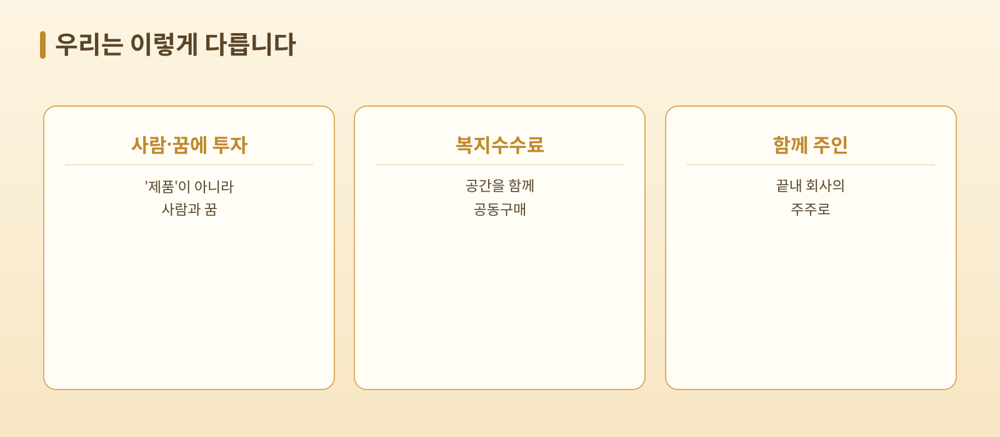
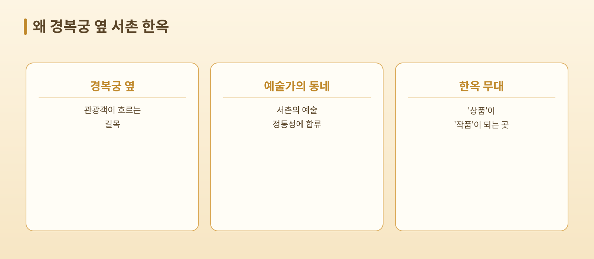
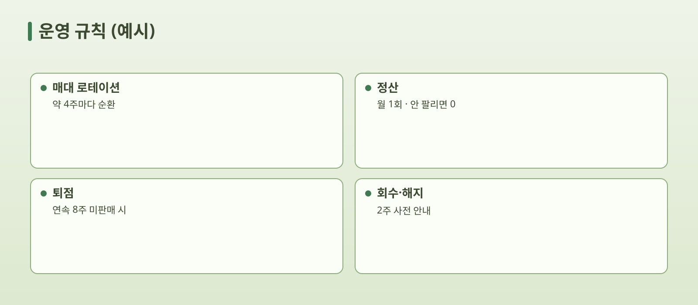
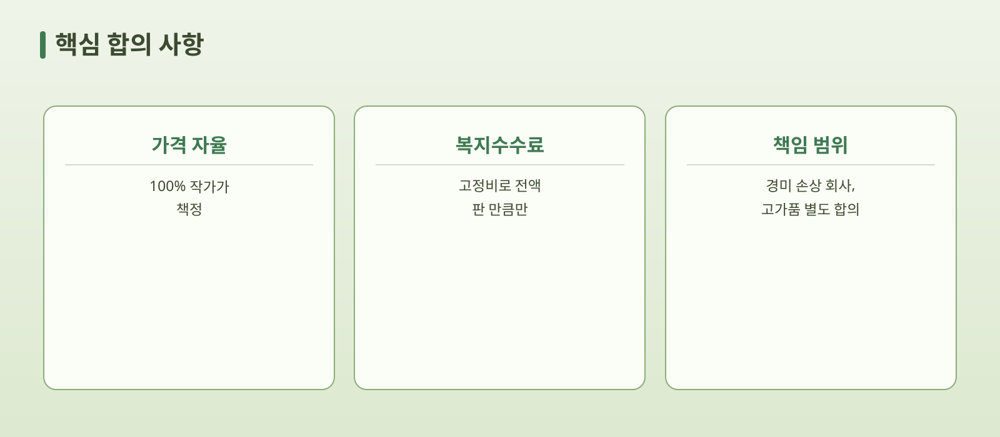
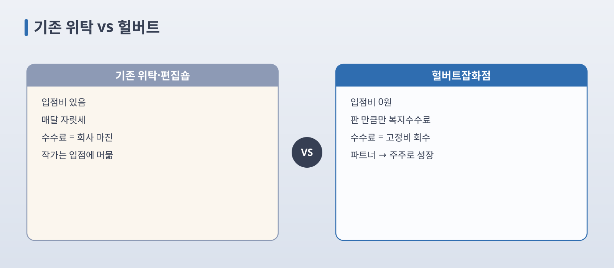
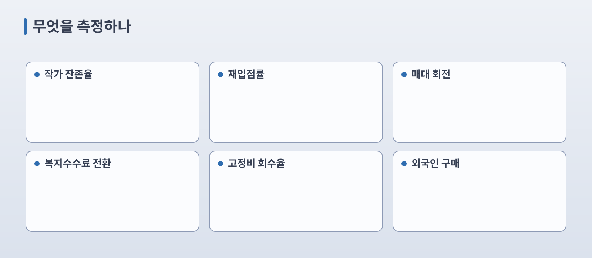
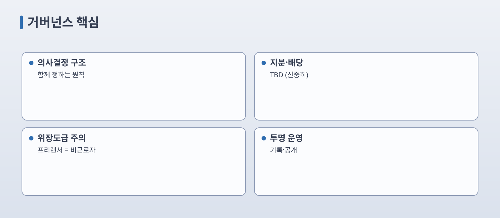
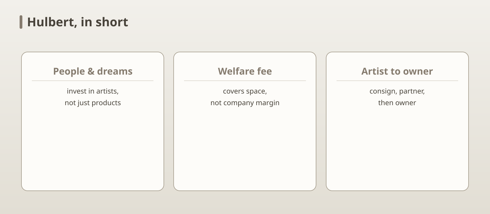
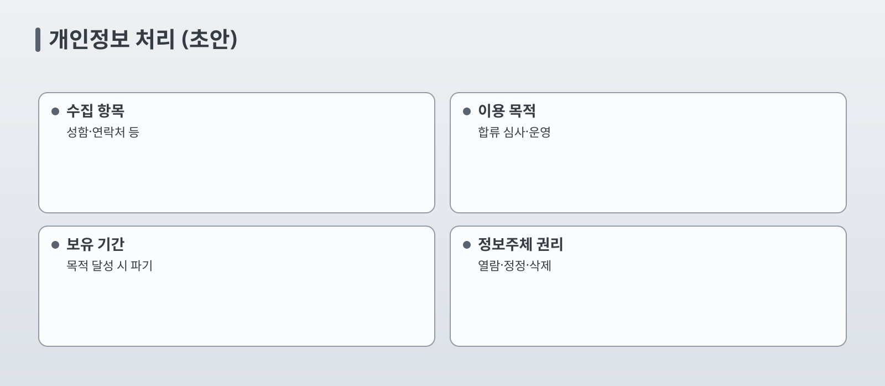
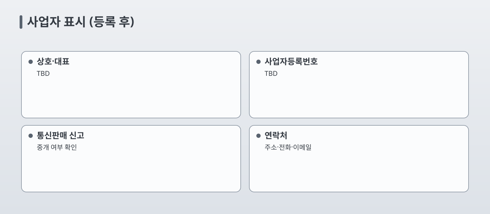

입점비 수십만 원을 내고, 자릿세가 매달 통장에서 빠져나가고, 안 팔리는 달엔 그 손해를 고스란히 작가가 떠안습니다. 그러다 보면 어느새 '정말 하고 싶은 작품' 대신 '당장 돈이 되는 흔한 물건'만 억지로 만들고 있죠.
그 마음을, 우리는 압니다. 그래서 헐버트잡화점은 처음부터 규칙을 다르게 짰습니다. 그 마음의 뿌리가 바로 우리 이름에 있습니다.
우리 이름은 한 외국인에게서 왔습니다
호머 헐버트(Homer B. Hulbert, 1863~1949)는 구한말 이 땅에 와, 한국인보다 더 한국을 사랑한 미국인 교육자이자 독립운동가입니다.
그는 한글을 깊이 사랑해, 1889년 세계 지리를 한글로 풀어낸 《사민필지(士民必知)》 — 한국 최초의 한글 교과서 — 를 펴냈습니다.
1907년 헤이그 특사를 도와, 일제의 시선을 자신에게 끌어 이준·이상설·이위종이 무사히 헤이그에 닿도록 했습니다. 정작 자신은 앞에 나서지 않은 조력자였죠.
그는 "웨스트민스터 사원보다 한국 땅에 묻히기를 원하노라"는 말을 남겼고, 그 소원대로 지금 서울 양화진에 잠들어 있습니다.
우리는 이 이름에, 우리가 하려는 일을 그대로 담았습니다.
헐버트 박사는…
그래서 우리는…
한글을 사랑했습니다
작가를 학벌·나이가 아니라 '꿈을 담은 한글 이름'으로 부릅니다
국적이 아니라 진심으로 한국을 품었습니다
경복궁 옆 서촌에서 외국인에게 한국 작가의 손길을 전합니다
앞이 아니라 뒤에서 받친 조력자였습니다
회사가 주인공이 아니라, 작가를 뒤에서 받칩니다 (복지수수료·고정비 공동부담)
한국인이 주인 되는 나라를 도왔습니다
작가가 끝내 회사의 주인(주주)이 되게 합니다
우리의 미션
돈 걱정에 꿈을 접는 작가가 없도록 — 생계와 공간은 우리가 받치고, 작가는 만들고 싶은 것만 만들게 한다. 그리고 그 작가와 끝내 함께 회사의 주인이 된다. 그것이 헐버트잡화점입니다.
우리는 작가님의 '제품'에 입점시키지 않습니다. 작가님이라는 '사람'과 그 '꿈'에 투자합니다.
2. 왜 경복궁 옆 서촌 한옥인가
헐버트잡화점은 아무 한옥이 아닙니다. 경복궁과 인왕산 사이, 서촌에 자리한 한옥입니다. 이 '위치'와 '공간'이 작가님께 어떤 이득인지부터 말씀드립니다.
A. 위치의 힘 — 경복궁 옆 서촌
① 경복궁이 곧 우리 간판입니다 — 경복궁역에서 걸어오는 길, 한복을 차려입은 내·외국인 관광객이 하루 종일 끊임없이 흐릅니다. 광고비 한 푼 없이 가만히 있어도 손님이 유입되는 길목, 작가님 작품이 자연스럽게 외국인 관광객의 눈앞에 놓입니다.
② 서촌은 '예술가의 동네' — 그 계보에 이름을 올립니다 — 양반의 북촌과 달리 서촌은 중인·문인·예술가가 풍류와 예술을 꽃피운 동네(위항문학의 본거지)였고 지금도 갤러리·공방이 빼곡합니다. 입점은 단순 입점이 아니라 예술적 정통성에 합류하는 일입니다.
③ 서촌의 DNA가 우리 철학과 같습니다 — 서촌은 신분(양반)이 아니라 재능과 풍류로 모인 사람들의 터. "나이도 학벌도 묻지 않는다"는 우리 철학과 같은 뿌리라, "여기가 내 동네구나" 하는 소속감을 줍니다.
④ 걷고 머무는 관광 동선 — 통인시장·보안여관(보안1942)·수성동 계곡·인왕산 산책로가 엮인 동네. 손님이 바삐 스쳐 지나가지 않고 여유롭게 머물며 작품을 발견하고, 머무는 시간이 길수록 구매로 이어집니다.
B. 한옥이라는 무대 자체의 힘
⑤ 무대 효과 = 프리미엄 격상 — 같은 작품도 형광등 백화점 매대가 아니라 한옥 마루와 마당, 한지에 스민 햇살 위에 놓이면 '상품'이 아니라 '작품'이 됩니다. 수공예의 따뜻함이 나무·흙·한지의 물성과 한 몸이 되죠. 체감 가치가 올라가니 더 비싸 보이고, 더 잘 팔립니다.
⑥ 포토제닉 = 공짜 홍보 — 한옥은 그 자체로 '사진 찍으러 오는' 배경입니다. 손님이 찍은 사진에 작가님의 작품이 함께 담겨 SNS로 퍼집니다. 광고비 0원으로 노출되는 셈이에요.
⑦ '선택받은 작가'라는 훈장 — 한옥에 어울리는 작품만 들이는 큐레이션 덕에, 우리 매장은 흔한 잡탕이 되지 않습니다. '경복궁 서촌 한옥에 작품을 건 작가'라는 사실 자체가 프리미엄 보증이 됩니다.
3. 무엇을 받나요 — 한옥에 어울리면 뭐든
장르도, 소재도 묻지 않습니다
도자·유리·금속 공예든, 가죽·직물·주얼리 같은 패션 소품이든, 캔들·디퓨저·비누 같은 향·리빙이든, 일러스트·지류·문구든 — 이건 그저 예시일 뿐입니다. 손으로 정성껏 만든 것이라면, 한옥에 어울리기만 하면 무엇이든 환영합니다.
단 하나의 기준: "한옥과 어울리는가"
우리의 유일한 큐레이션 기준입니다. 거창하지 않아요. 아래에 고개가 끄덕여지면 충분합니다.
소재의 온도 — 나무·흙·한지·천처럼 손과 자연의 온기가 느껴지는가.
손맛의 정성 — 기계로 찍어낸 대량생산이 아니라, 만든 이의 시간이 담겨 있는가.
과하지 않은 결 — 한옥의 차분한 무드를 깨지 않는, 단정한 색과 디자인인가.
화려해야 하는 게 아닙니다. 한옥 마루 위에 놓였을 때 자연스럽게 어울리는가 — 그거 하나면 됩니다. 애매하면 편하게 문의 주세요. 함께 보면 됩니다.
4. 우리가 일하는 방식
꿈을 담은 한글 이름
우리는 나이도, 학벌도 묻지 않습니다. 가장 먼저 묻는 것은 오직 하나, "당신의 꿈은 무엇인가요?"
그리고 그 꿈을 담은 한글 이름(예: 온새미로, 봄해)으로 서로를 부릅니다. 이름만 들어도 서로의 꿈을 알게 되니, 같은 꿈을 품은 사람을 이 공간에서 만나게 됩니다. 그렇게 만난 동료는 하고 싶은 일을 함께 헤쳐 나갈 평생의 '인연'이 됩니다. (한글을 사랑한 헐버트 박사의 마음이 여기에 있습니다.)
매대 로테이션
진열대는 한자리에 고정되지 않고, 회전목마처럼 주기적으로 순환합니다.
손님에게는 — 올 때마다 매장이 새로워서 "이번엔 또 어떤 보물이 있을까" 하며 계속 찾아오게 됩니다. (집객력 유지)
작가에게는 — 내 자리가 한쪽에 고이지 않고, 모두에게 좋은 자리가 공평하게 돌아갑니다. 자리가 빠지는 건 '쫓겨난 것'이 아니라 리프레시할 시간을 번 것입니다.
5. 돈 이야기 — '복지수수료'
가장 중요한 부분입니다. 헐버트잡화점의 수수료는 보통 가게의 수수료와 정반대입니다.
입점비 0원, 가격은 작가님이 정합니다
들어올 때 내는 입점비는 없습니다. 그리고 가격은 처음부터 끝까지 작가님이 직접 책정합니다. 밤새워 만든 것이 3만 원의 가치라면, 그대로 3만 원에 팝니다. 우리는 작가님의 가치에 손대지 않습니다.
수수료는 우리가 가져가는 마진이 아닙니다
판매가 일어나면 수수료를 받긴 합니다. 하지만 이 돈은 회사가 챙기는 마진이 아니라 한옥의 월세·전기세·청소·관리비 등 고정비로 전액 쓰입니다.
즉, 작가님은 매달 나가는 고정 월세를 혼자 독박 쓰는 게 아니라, 판 만큼만 수수료를 내고 이 멋진 서촌 한옥 공간을 다 함께 공동구매하는 셈입니다. 안 팔린 달엔 영수증조차 날아오지 않습니다. 그래서 우리는 이것을 그냥 수수료가 아니라 '복지수수료'라고 부릅니다.
적게 낼수록 싸지는 누진 구조
복지수수료는 누진제입니다.
제품을 적게 낼수록 → 수수료율이 내려갑니다. 🌱
제품을 많이 낼수록 → 수수료율이 올라갑니다. 🪑🪑🪑
왜냐고요? 한옥 매대는 모두가 나눠 쓰는 공원 벤치 같은 한정된 공동 자원이기 때문입니다. 한 작가가 제품을 잔뜩 깔면 그만큼 줄 서 있는 다른 작가의 자리가 사라집니다. 내가 차지한 만큼 더 부담하는 것이 공평하니까요. 강자가 약자의 자리를 받쳐 주는, 재분배에 가까운 구조라 '복지'라는 이름이 붙습니다.
낸 제품 수 (예시)
공간 점유
수수료율 (예시)
적음 (1~3개)
낮음
낮게 (예: 10%)
보통 (4~10개)
중간
중간 (예: 15%)
많음 (11개~)
높음
높게 (예: 25%)
위 구간·요율은 구조 설명용 예시입니다 — 모두 일반수수료 30%보다 낮은 '복지 할인'이며, 증명한(일정 매출을 넘긴) 작가에게 적용됩니다. 실제 수치·기준선은 매대 수용량과 고정비 회수율을 보고 정합니다.
복지수수료는 '증명하면' 열립니다 — 그전엔 일반수수료 30%
복지수수료는 처음부터 켜지지 않습니다. 입점하면 주는 혜택이 아니라, 증명하면 주는 보상이기 때문입니다.
일정 매출에 도달하기 전까지는 '일반수수료' 30%로 시작합니다. (아직 검증되지 않은 단계에선 보통의 위탁 수준인 30%로 — 그래야 한옥 고정비가 흔들림 없이 회수됩니다.)
작가가 일정 매출을 넘기면 비로소 누진 '복지수수료'가 열려, 30%였던 요율이 점유량에 따라 그 아래로 내려갑니다. (스스로 증명한 작가에게, 적게 점유할수록 더 깎아 주는 복지가 보답으로 돌아갑니다.)
'일정 매출' 기준선은 공개된 고정 숫자가 아니라 운영 상황에 따라 내부에서 정합니다(임의·케이스별). 일반수수료 30%도 운영하며 조정될 수 있습니다.
즉 "회사가 버틸 힘은 일반수수료 30%가 떠받치고, 복지는 잘 파는 작가에게 보답한다" — 이것이 지속 가능한 순서입니다.
그래서 나오는 마법: "잘 팔리는 제품 하나 = 평생 매출"
이 구조의 결론은 이렇습니다.
가장 자신 있는 제품 딱 하나만 둔다 → 공간 점유 최소 → 복지수수료율 최저 🌱
수수료가 거의 안 나가니 → 매출 대부분이 내 지갑으로 💰
그 하나가 잘 팔리니 → 퇴점 규칙(안 팔리면 빠짐)에도 절대 안 걸린다 ✅
결과: 그 한 개가 평생 효자 상품 👑
물건 백 개를 깔고 관리에 치이는 게 아니라, 베스트 하나만 갈고닦아 두면 평생 안정적인 수익이 납니다. 양으로 자리 욕심부리는 사람은 손해, 질로 승부하는 사람은 평생 이득. 이 시스템은 '진짜 좋은 물건 하나를 가진 작가'에게 최고의 보상을 줍니다.
단 하나의 전제 — "그 하나가 계속 잘 팔리는 한" 입니다. 시장이 식어 멈추면 퇴점 규칙에 걸립니다.
6. 작가의 여정 — 지원부터 정산·성장까지
처음 문을 두드리는 순간부터 회사의 주인이 되기까지, 한눈에 그려 보세요.
아래 기간·주기·금액은 예시(제안)이며 운영하며 조정합니다. 주식·법인 관련 세부는 아직 미정(TBD)입니다.
① 지원 — 거창한 서류는 없습니다. 온라인 폼이나 DM으로 ⑴ 작품 사진 몇 장, ⑵ "당신의 꿈" 한 문장, ⑶ 불리고 싶은 한글 이름(없으면 함께 지어요)만 보내 주세요.
② 큐레이션 — '한옥과 어울리는가' 그 하나만 봅니다. 떨어뜨리는 심사가 아니라 서로 결이 맞는지 확인하는 과정이에요.
③ 입점 — 입점비 0원. 가격은 작가님이 직접 책정하고, 꿈을 담은 한글 이름과 첫 매대 자리를 받습니다.
④ 진열·로테이션 — 작품을 한옥에 어울리게 진열합니다. 예) 약 4주마다 자리가 회전목마처럼 순환해, 좋은 자리가 모두에게 공평히 돌아갑니다.
⑤ 판매·정산 — 판매가 일어나면, 예) 월 1회 복지수수료를 뺀 금액을 정산해 입금합니다. 안 팔린 달엔 내야 할 돈이 없습니다.
⑥ 퇴점·재입점 — 예) 일정 기간(가령 8주) 손님의 선택을 받지 못한 작품은 다음 작가를 위해 자리를 잠시 양보합니다. 쫓겨나는 게 아니라 리프레시하는 것 — 다듬어서 언제든 다시 들어올 수 있고, 작가님이 먼저 "쉬어 가겠다" 해도 됩니다.
⑦ 성장 — 더 깊이 함께하고 싶다면 너투사(프리랜서 파트너), 더 나아가 나투사(주주)로. 바로 다음 장에서 이어집니다.
7. 함께 오를 수 있는 3단계 계단
작가님이 얼마나 더 깊이 함께하고 싶은지에 따라, 오를 수 있는 세 개의 계단이 있습니다. 각 계단에는 달콤한 혜택만큼 정직한 책임도 따릅니다.
🧱 1단계 — 판매(복지)수수료 관계
혜택: 가격은 내가 정하고, 입점비는 0원, 고정 월세 독박도 없습니다. 오직 판 만큼만 복지수수료를 냅니다.
단점 (정직하게): 우리의 목표는 "최대한 많은 작가에게 공평한 기회"입니다. 그래서 매대는 한정적이고, 손님의 선택을 오래 받지 못한 제품은 다음 작가를 위해 자리를 양보(퇴점)해야 합니다. 살아남는 것은 온전히 내 실력과 손님의 선택에 달린 냉정한 서바이벌입니다.
🏃 2단계 — 너투사 (3.3% 프리랜서 파트너)
너투사 = '너 — 회사와 동료 — 에게 투자하는 사람들'. 내 작품만이 아니라 회사라는 공동의 그릇에 내 능력을 보태는 단계입니다.
대상: 제품 판매 소득만으로는 생활이 조금 부족하거나, 손재주 외에 다른 능력으로도 회사를 돕고 싶은 작가.
'3.3%'란?: 4대보험에 매이는 정규직이 아니라, 사업소득 원천징수 3.3%만 떼는 프리랜서(위촉) 형태라는 뜻입니다. 부담 없이 회사 일을 맡는 유연한 관계예요.
혜택: 마케팅·매장 관리·디자인 등 회사 일을 맡아 월급처럼 안정적인 추가 소득을 얻고, 회사를 내 손으로 직접 키우는 보람을 느낍니다. 제품 소득이 부족해도 생계가 받쳐 주니, 작품은 천천히 키워 갈 수 있습니다.
단점 (정직하게): 이제 순수한 예술가를 넘어 회사의 목표를 함께 이루는 '일잘러 파트너'가 되어야 합니다. 낮에는 회사 일, 밤에는 작품 — 시간과 체력이 부족해지고, 두 가지 균형을 잡지 못하면 둘 다 무너질 수 있습니다.
👑 3단계 — 나투사 (법인 주주 / "나에게 투자하는 사람들")
나투사 = '나에게 투자하는 사람들'. 남의 가게에 세 들어 사는 게 아니라, 내가 회사의 주인이 되어 나 자신의 미래에 투자하는 단계입니다.
혜택: 단순 입점 작가가 아니라 법인의 진짜 주주가 되어 주식 가치에 도전합니다. 이제 수수료로 고정비를 메우는 임시 관계가 아닙니다. 한옥의 월세·관리비를 법인이 100% 공동 부담합니다. 로테이션으로 자리가 밀리거나 매출이 잠시 주춤해도 끄떡없는 완전한 울타리 안에서, 오직 하고 싶은 창작에만 인생을 겁니다.
단점 (왕관의 무게): 고정비 걱정이 사라진 대신, 여러분의 손에 수많은 동료 작가의 꿈이 달려 있습니다. 내가 게을러져 법인이 흔들리면, 1단계에서 막 꿈을 펼치기 시작한 새내기와 2단계에서 밤낮없이 일하는 너투사 동료의 터전이 한순간에 사라집니다. "내 물건만 잘 팔리면 끝"이 통하지 않는, 동료들의 미래까지 책임지는 자리입니다.
📌 나투사의 구체적인 주식 배분·법인 형태·배당 방식은 아직 정해지지 않았습니다(TBD). 함께할 동료들과 의논하며 만들어 갈, 가장 신중해야 할 부분이기 때문입니다.
8. 작가님께 드리는 약속 (모집문)
작가님, 위탁 매장에 한 번쯤 데여 보셨죠? 입점비 수십만 원을 내고, 자릿세가 매달 빠져나가고, 안 팔리면 그 손해를 고스란히 작가가 떠안다 보니, 결국 정말 하고 싶은 작품 대신 당장 돈이 되는 흔한 물건만 억지로 만들게 되는 그 마음을 우리는 압니다.
그래서 헐버트잡화점은 입점비를 받지 않고, 매달 나가는 고정 월세도 작가님께 지우지 않으며, 오직 판매가 일어난 만큼만 '복지수수료'를 받습니다. 그 수수료마저 회사가 가져가는 마진이 아니라 경복궁 옆 서촌 한옥의 월세와 전기세, 관리비로 전액 쓰이기에, 작가님은 떼이는 것이 아니라 멋진 한옥 공간을 다 함께 공동구매하는 셈입니다. 게다가 적게 낼수록 수수료율이 내려가므로, 잘 팔리는 작품 하나만 곱게 두어도 그것이 평생 효자 상품이 됩니다.
가격은 처음부터 끝까지 작가님이 정하니, 우리는 작가님의 가치에 손대지 않습니다. 다른 플랫폼이 작가님의 '제품'에 입점시킨다면, 우리는 작가님이라는 '사람'과 그 '꿈'에 투자한다는 점에서 완전히 다릅니다. 그래서 단계가 오를수록 작가님은 회사 일을 함께하는 프리랜서 파트너가 되고(너투사), 끝내는 회사의 진짜 주인인 주주가 됩니다(나투사).
다만 솔직히 말씀드립니다. 1단계에서는 손님의 선택을 받지 못한 작품은 다음 작가를 위해 자리를 양보해야 하고, 주주가 되면 동료들의 꿈까지 책임지는 무게가 따릅니다. 이 책임을 기꺼이 질 각오가 있는 분과 함께합니다.
돈 걱정 때문에 하고 싶은 작품을 포기해 본 적이 있다면, 그 걱정은 우리가 대신 짊어질 테니 작가님은 만들고 싶은 것만 만드세요. 우리는 작가님을 입점시키러 온 것이 아니라, 함께 회사의 주인이 될 동료를 찾으러 왔습니다.
자주 묻는 질문 (FAQ)
"또 입점비·자릿세 뜯기는 거 아냐?" → 입점비 0원, 고정 월세 0원. 판 만큼만 복지수수료를 냅니다. 안 팔린 달엔 영수증조차 안 옵니다.
"가게가 내 작품값 후려치는 거 아냐?" → 가격은 100% 작가님이 정합니다. 우리는 작가님 가치에 손대지 않습니다.
"수수료 떼이는 건 똑같잖아?" → 처음엔 일반수수료 30%지만, 그 돈마저 우리가 갖는 게 아니라 한옥 월세·관리비로 전액 들어갑니다. 게다가 일정 매출을 넘겨 '복지수수료'가 열리면 적게 낼수록 30%보다 더 싸지니, 잘 팔리는 하나만 두면 거의 다 작가님 몫이고 그게 평생 매출이 됩니다.
"어떤 작품이어야 하나요?" → 장르도 소재도 묻지 않습니다. 한옥에 어울리면 무엇이든 좋습니다. (자세한 기준은 3번 참고)
"정산은 언제, 어떻게 받나요?" → 예) 월 1회, 판매분에서 복지수수료를 뺀 금액을 입금합니다. 안 팔리면 낼 돈이 없습니다. (구체 주기는 예시이며 조정 가능)
"자리가 빠지면 그걸로 끝인가요?" → 아니요. 매대가 로테이션으로 돌고, 다듬어서 언제든 재입점할 수 있습니다. 자리가 빠진 건 리프레시할 시간을 번 것입니다.
"안 팔리면 결국 내가 망하잖아?" → 더 깊이 들어오시면(나투사) 그 월세 리스크 자체를 법인이 공동 부담합니다.
"한옥이라 까다롭지 않아?" → 맞습니다, 한옥에 어울리는 작품만 받습니다. 그 큐레이션이 곧 '경복궁 서촌 한옥에 작품을 건 작가'라는 프리미엄 보증이 됩니다.
"주주(나투사)는 어떻게 되나요?" → 단계가 오르면 법인 주주에 도전합니다. 구체적인 지분·법인 형태·배당은 함께 정해 갈 부분이라 아직 TBD입니다.
작가님 유형에 따라
생계가 불안한 초보 작가 — "제품 소득이 부족하면 2단계 너투사 프리랜서로 회사 일을 하며 월급처럼 벌고, 작품은 천천히 키우시면 됩니다."
베스트셀러 하나가 있는 작가 — "잘 팔리는 그 하나만 두세요. 복지수수료는 최저, 매출은 거의 다 가져가고 퇴점도 없으니 평생 매출이 됩니다."
야망 있는 작가 — "여기서 끝이 아닙니다. 3단계 나투사 주주가 되면 회사의 가치가 곧 작가님의 자산이 됩니다."
소속감을 원하는 작가 — "나이도 학벌도 묻지 않고 꿈을 담은 한글 이름으로 부르며, 같은 꿈을 가진 평생의 인연을 여기서 만납니다."
한 줄 슬로건
입점비도, 월세 부담도, 가격 간섭도 없이 — 다른 곳이 당신의 '제품'에 입점시킬 때, 우리는 경복궁 옆 서촌 한옥에서 당신의 '꿈'에 투자해 끝내 함께 회사의 주인이 됩니다.
9. 왜 이 구조가 견고한가
위치가 곧 해자(垓子) — 경복궁 옆 서촌이라는 자리는 아무나 복제할 수 없는 관광 유동인구와 예술 동네의 정통성을 동시에 줍니다.
락인(Lock-in) — 단계가 오를수록 소속감과 오너십이 깊어져, 우수한 작가가 다른 플랫폼으로 이탈하지 않습니다.
리스크 셰어 — 고정비를 법인이 흡수하므로 작가는 생계 압박 없이 창작에 몰두하고, 그렇게 나온 진정성은 카피캣이 흉내 낼 수 없는 팬덤을 만듭니다.
공간이 곧 필터 — 한옥이라는 제약이 자동 큐레이션이 되어, 잡화점 전체의 무드를 고급스럽게 지켜 줍니다.
한 줄로 압축하면:
당장의 마진을 떼어 가는 가게가 아니라, 작가가 진짜 하고 싶은 일을 하도록 돈과 공간을 투자해 주고(나투사), 책임과 성과를 함께 나누며 자립하는 경복궁 옆 서촌의 한옥 공유 공동체.
함께하고 싶다면
지원 방법 (제안): 온라인 폼 또는 DM으로 ① 작품 사진 ② "당신의 꿈" 한 문장 ③ 불리고 싶은 한글 이름 — 이 세 가지만. (지원 채널 오픈 예정)
위치: 경복궁 옆 서촌 (상세 주소 TBD)
운영 시간 / 문의처: TBD
우리는 작가님의 나이도 학벌도 묻지 않습니다. 가장 먼저 묻는 것은 오직 하나 — "당신의 꿈은 무엇인가요?"
부록 — 용어 사전
용어
뜻
헐버트
한글을 사랑하고 한국 독립을 도운 미국인 호머 헐버트 박사(1863~1949). 작가를 뒤에서 받친다는 우리 정신의 상징.
복지수수료
회사 마진이 아니라 한옥 월세·관리비 등 고정비로 전액 쓰이는 수수료. 판매가 일어난 만큼만 냄.
누진제
매대를 적게 점유할수록 수수료율이 낮아지고, 많이 점유할수록 높아지는 구조.
매대 로테이션
진열 자리가 주기적으로 순환해 좋은 자리가 모두에게 공평히 돌아가는 운영 방식.
꿈을 담은 한글 이름
나이·학벌 대신, 꿈을 담은 한글 이름(예: 온새미로·봄해)으로 서로를 부르는 문화.
너투사
2단계. '너(회사·동료)에게 투자하는 사람들'. 3.3% 프리랜서로 회사 일을 도우며 추가 소득을 얻는 작가.
나투사
3단계. '나에게 투자하는 사람들'. 법인의 주주가 되어 회사 가치에 도전하는 작가.
헐버트잡화점 — 브랜드 정의서 (브랜드 바이블)
🏷️ ✅ 확정 · 갱신 2026-06 · 톤·용어 정본
모든 글·말·이미지가 한 사람의 목소리처럼 들리도록, 헐버트잡화점이 누구이고 어떻게 말하는지를 한곳에 정의합니다.
새 콘텐츠(웹·SNS·인쇄물·매장 안내·작가 모집)를 만들 때는 이 문서를 일관성의 기준으로 삼습니다.
'수수료'를 회사 이익처럼 들리게 하지 않기 — 언제나 "한옥 고정비로 전액"이라는 맥락과 함께.
'복지수수료'는 모두에게 자동이 아님 — 증명(일정 매출) 후 열린다는 전제를 빠뜨리지 않기.
작가를 시혜의 대상으로 그리지 않기 — '베푼다'가 아니라 함께 나누고 함께 주인이 된다는 결로.
장르 한정처럼 들리지 않기 — "도자/캔들만"이 아니라 "한옥에 어울리면 무엇이든"이 원칙(예시는 예시로).
용어 일관성 — 너투사/나투사/복지수수료/일반수수료 등은 7장 글로서리 표기를 따르기.
이 문서가 흔들릴 때마다 다시 돌아올 닻입니다.
함께 · 공평 · 투명, 그리고 — 잃을 걱정 없이, 하고 싶은 창작만.
헐버트작가촌 — 사이트맵 (정보구조 / IA)
🏷️ ✅ 확정 · 갱신 2026-06 · 사이트 정보구조(IA)·페이지 지도
이 사이트 = 헐버트작가촌 (작가 전용 사이트). 지금 만드는 범위 = '예비 작가 모집' 단계 하나에 집중합니다.
⚠️ 입점 작가 회원·커뮤니티 영역(아카데미·매거진·사랑방·내 정산)은 '다음 시점' 으로 분리 — 전략은 헐버트작가촌-기획.md.
⚠️ 헐버트잡화점(매장·고객)·외국인은 이 사이트의 대상이 아닙니다.작가가 극(極) 핵심.
버전 v5.0 · 확정 (2026-06) | 회원·커뮤니티 영역을 '다음 시점'으로 분리, 현재 사이트맵은 모집 단계에 집중.
전체 원칙: 히어로에서 3초 안에 헤드라인+CTA · 긴 글 대신 카드·도식·타임라인 · 모바일 우선 · 따뜻한 톤 · 실제 작가 사진.

우리는 누구인가
🏷️ ✅ 확정 · 갱신 2026-06 · /about 페이지 카피
페이지: /about
작가가 읽는 소개 카피입니다. 톤: 함께 · 공평 · 투명, 따뜻한 서사체. ('모시다' 금지 — 늘 동료·수평으로.)
한 외국인의 이름에서 시작합니다
우리 이름 헐버트는 한 외국인에게서 왔습니다.
호머 헐버트(Homer B. Hulbert, 1863~1949) — 구한말 이 땅에 와, 한국인보다 더 한국을 사랑한 미국인 교육자이자 독립운동가입니다.
그는 한글을 깊이 사랑해, 1889년 세계 지리를 한글로 풀어낸 《사민필지(士民必知)》 — 한국 최초의 한글 교과서 — 를 펴냈습니다.
1907년 헤이그 특사를 도와, 일제의 시선을 자신에게 끌어 이준·이상설·이위종이 무사히 헤이그에 닿게 했습니다. 정작 자신은 앞에 나서지 않은 조력자였습니다.
그는 "웨스트민스터 사원보다 한국 땅에 묻히기를 원하노라"는 말을 남겼고, 그 소원대로 지금 서울 양화진에 잠들어 있습니다.
우리는 이 이름에, 우리가 하려는 일을 그대로 담았습니다.
그래서 우리는 — 작가를 뒤에서 받칩니다
헐버트 박사가 앞이 아니라 뒤에서 받친 사람이었듯, 헐버트작가촌도 회사가 주인공이 아닙니다. 주인공은 작가입니다. 우리는 그저 뒤에서 받치는 조력자입니다.
헐버트 박사는…
그래서 우리는…
한글을 사랑했습니다
작가를 나이·학벌이 아니라 '꿈을 담은 한글 이름'으로 부릅니다 (예: 온새미로·봄해)
국적이 아니라 진심으로 한국을 품었습니다
작가의 장르도 묻지 않습니다 — 한옥에 어울리면 무엇이든
앞이 아니라 뒤에서 받친 조력자였습니다
회사가 주인공이 아니라 작가를 뒤에서 받칩니다
우리의 미션
돈 걱정 때문에 하고 싶은 작품을 접는 작가가 없도록 — 생계와 공간은 우리가 받치고, 작가는 만들고 싶은 것만 만들게 한다.
다른 곳이 작가님의 '제품'을 입점시킬 때, 우리는 작가님이라는 '사람'과 그 '꿈'에 함께 투자합니다.
그래서 규칙도 보통 가게와 다릅니다.
입점비 0원 — 들어올 때 내는 돈이 없습니다.
가격은 작가님이 — 처음부터 끝까지 작가님이 책정합니다. 우리는 손대지 않습니다.
수수료는 회사 마진이 아닙니다 — 한옥의 월세·관리비 등 고정비로 전액 쓰입니다. 떼이는 게 아니라, 이 한옥을 다 함께 공동구매하는 셈입니다. (자세한 구조는 운영정책 참고)
우리가 지키는 세 가지
함께 일하기 위한 약속입니다. 거창하지 않지만, 끝까지 지킵니다.
🤝 함께 — 작가는 손님도 을(乙)도 아닌 동료입니다. 같은 눈높이에서 함께 만들어 갑니다.
⚖️ 공평 — 매대는 모두가 나눠 쓰는 한정된 공동 자원입니다. 좋은 자리가 모두에게 공평히 돌아가도록 운영합니다.
🔍 투명 — 판매 기록과 정산은 언제나 근거와 함께 공개합니다. 신뢰는 투명에서 나옵니다.
여기에 하나를 더합니다 — 정직. 달콤한 혜택만 말하지 않고, 단점과 각오도 먼저 보여드립니다.
왜 '경복궁 옆 서촌 한옥'이 작가님께 좋은가
우리는 아무 한옥이 아니라, 경복궁과 인왕산 사이 서촌(西村)의 한옥입니다. 이 자리가 왜 다른 누구도 아닌 작가님께 이득인지부터 말씀드립니다.
① 작품이 '잘 보입니다' — 관광 유동인구
경복궁역에서 걸어오는 길, 한복을 차려입은 내·외국인 관광객이 하루 종일 끊임없이 흐릅니다. 광고비 한 푼 없이, 가만히 있어도 작가님 작품이 사람들의 눈앞에 놓이는 길목입니다. 통인시장·수성동 계곡으로 이어지는 동선이라, 손님은 바삐 스치지 않고 여유롭게 머물며 작품을 발견합니다.
② '예술가의 동네'라는 정통성
양반의 북촌과 달리, 서촌은 예부터 중인·문인·예술가가 풍류와 예술을 꽃피운 동네였고, 지금도 갤러리와 공방이 빼곡합니다. 여기에 작품을 거는 건 단순 입점이 아니라 그 예술적 계보에 이름을 올리는 일입니다. "나이도 학벌도 묻지 않는다"는 우리 철학과도 뿌리가 같아, "여기가 내 동네구나" 하는 소속감을 줍니다.
③ 한옥이라는 '무대 프리미엄'
같은 작품도 형광등 백화점 매대가 아니라 한옥 마루와 마당, 한지에 스민 햇살 위에 놓이면 '상품'이 아니라 '작품'이 됩니다. 손으로 만든 따뜻함이 나무·흙·한지의 물성과 한 몸이 되니, 체감 가치가 올라갑니다. 게다가 한옥은 그 자체로 사람들이 사진을 찍는 배경이라, 손님이 찍은 사진에 작가님 작품이 함께 담겨 퍼집니다. 무대도, 홍보도 작가님 편입니다.
정리하면 — 위치도, 동네도, 한옥이라는 무대도, 전부 작가님이 더 잘 보이고 더 잘 팔리기 위한 것입니다.
한 줄로
앞이 아니라 뒤에서 받친 헐버트처럼 — 경복궁 옆 서촌 한옥에서, 우리는 작가를 받치고 작가는 만들고 싶은 것만 만듭니다.

당신의 작품이 놓일 곳
🏷️ ✅ 확정 · 갱신 2026-06 · /space 페이지 카피
페이지: /space
작가님이 '내 작품이 놓일 한옥'을 미리 둘러보는 페이지입니다. 톤: 작가 관점·감성. ('모시다' 금지 — 늘 동료·수평으로.)
먼저, 이 공간을 그려보세요
문을 열면 형광등이 아니라 햇살이 먼저 듭니다.
경복궁 옆 서촌의 한 채 한옥, 너른 100평대 규모입니다. 오래 닳은 마루의 결, 한낮의 빛이 한지에 부드럽게 스미고, 작은 마당으로 계절이 드나듭니다. 나무와 흙, 종이의 물성이 공기에 배어 있어 — 여기에 놓인 것은 무엇이든 차분하게 가라앉습니다.
이곳은 작품을 '진열'하는 매장이 아니라, 작품이 머무는 무대에 가깝습니다.
📷 [사진 자리 — 한옥 외관: 경복궁 옆 서촌 골목에서 바라본 한옥 정면]
캡션 예시: "경복궁에서 몇 걸음, 서촌 골목 안의 한옥."
📷 [사진 자리 — 마루와 마당으로 드는 햇살의 결]
캡션 예시: "한지에 스민 빛, 나무의 온기 — 작품이 가장 작품다워지는 자리."
당신의 작품이 '작품'으로 보이는 이유
백화점 매대 위 형광등 아래에서는 모든 게 '상품'이 됩니다. 하지만 한옥 마루 위, 한지에 스민 햇살 곁에 놓이면 같은 작품도 달라집니다.
물성이 맞아떨어집니다 — 손으로 만든 따뜻함이 나무·흙·한지의 결과 한 몸이 됩니다. 작품이 공간에 '얹히는' 게 아니라 원래 거기 있던 것처럼 어울립니다.
체감 가치가 올라갑니다 — 무대가 격을 높입니다. 같은 가격표도 한옥 위에서는 더 귀하게 읽힙니다.
사진이 저절로 됩니다 — 한옥은 그 자체로 사람들이 카메라를 드는 배경입니다. 손님이 찍은 한 장에 작가님 작품이 함께 담겨 멀리 퍼집니다.
📷 [사진 자리 — 작품이 한옥 마루 위에 놓인 연출 컷]
캡션 예시: "여기서는 '상품'이 아니라 '작품'이 됩니다."
작품이 놓이는 자리 — 매대 '칸'
작품은 매대의 '칸' 단위로 자리를 잡습니다.
기본 한 칸부터 — 작가당 기본 1칸을 드립니다. (예시: 가로 40cm 내외/칸 — 운영하며 조정) 자리가 여유 있을 때 추가 칸도 신청할 수 있습니다.
자리는 머물지 않고 돕니다 — 매대는 회전목마처럼 약 4주마다(예시) 순환합니다. 좋은 자리가 한쪽에 고이지 않고 모두에게 공평히 돌아갑니다. 자리가 바뀌는 건 '밀려난 것'이 아니라, 작품이 새 손님과 새 빛을 만나는 일입니다.
점유한 만큼만 — 매대는 모두가 나눠 쓰는 한정된 공동 자원이라, 차지한 만큼 공평하게 나눠 부담합니다. (수수료 구조는 운영정책 참고)
작품 곁에는 가격표 + 작가님의 꿈을 담은 한글 이름이 함께 놓입니다. 손님은 작품과 함께 그 작품을 만든 사람의 꿈을 읽게 됩니다.
📷 [사진 자리 — 매대 '칸' 구성과 작가 이름표가 함께 놓인 모습]
캡션 예시: "작품 곁에 놓이는 건 가격표, 그리고 당신의 한글 이름."
어디에 있나 — 위치 감
골목의 결까지 느껴지도록, 동네 감부터 전합니다.
경복궁 바로 옆 — 경복궁역에서 걸어 들어오는 길, 관광객이 하루 종일 흐르는 동선 안에 있습니다.
서촌 골목 안 — 예술가의 동네로 이어져 온 길. 갤러리와 공방 사이에 자연스럽게 섞입니다.
걷는 동선 위 — 통인시장, 수성동 계곡이 가까워, 손님이 머물며 작품을 발견하는 흐름이 만들어집니다.
📍 상세 주소·찾아오는 길은 TBD(확정되면 안내드립니다)
📷 [사진 자리 — 동네 지도/약도 또는 서촌 골목 풍경]
캡션 예시: "경복궁에서 통인시장으로 이어지는 길목, 그 안의 한옥."
여기에, 당신의 작품이 놓입니다.
함께하는 작가들 (/makers)
🏷️ ✅ 확정 · 갱신 2026-06 · /makers 페이지 카피
헐버트작가촌 웹페이지 카피 — 예비 작가가 "이런 동료들과 함께하게 되는구나"를 그려 보는 페이지입니다.
톤: 함께 · 공평 · 투명 ('모시다' 금지). 작가는 손님이 아니라 동료입니다.
〔 〕 안은 버튼·라벨·UI 요소입니다.
⚠️ 아래 작가 카드 4개는 전부 가상 '예시'입니다. 실제 입점 작가가 생기면, 본인 동의를 받아 진짜 이름·작품·인터뷰·사진으로 교체하세요. (교체 안내는 맨 아래 참고)
① 인트로
〔라벨〕 함께하는 작가들
여기, 같은 꿈을 가진 동료들이 있습니다.
헐버트작가촌은 나이도 학벌도 묻지 않습니다. 가장 먼저 묻는 건 하나예요 — "당신의 꿈은 무엇인가요?"
그 꿈을 담은 한글 이름으로 서로를 부르고, 경복궁 옆 서촌 한옥 마루 위에 각자의 작품을 나란히 올립니다.
아래는 앞으로 이곳을 채워 갈 동료의 모습입니다. 장르도 손맛도 제각각이지만, "만들고 싶은 걸 만든다"는 마음은 같습니다. 다음 빈자리의 주인공이 바로 당신일 수 있어요.
📌 지금 보이는 카드는 분위기를 보여주기 위한 예시입니다. 첫 작가들이 입점하면 진짜 얼굴로 바뀝니다.
② 작가 카드 — 템플릿
모든 작가 카드는 아래 필드를 같은 순서로 채웁니다. 디자인은 카드(그리드) 형태, 모바일에서는 1열로 쌓입니다.
필드
설명
비고
작품 사진
대표 작품 1컷 (한옥 마루·햇살 배경 권장)
〔이미지 자리〕 정사각 또는 4:5
한글 이름
꿈을 담은 한글 이름
예: 온새미로 · 봄해
장르
도예 / 가죽 / 향·리빙 / 일러스트·지류 등
필터 태그와 연동
"꿈" 한 줄
작가가 직접 적은 꿈 한 문장
모집의 핵심 — 따옴표로 강조
대표 작품
작품명 + 한 줄 소개
희망 판매가는 선택
한 줄 인터뷰
작가의 목소리 한 마디
"" 안에 구어체로
카드 레이아웃(텍스트 배치 순서)
┌────────────────────────────┐
│ 〔작품 사진 자리〕 │
│ │
├────────────────────────────┤
│ [장르 태그] │
│ 한글 이름 │
│ ✦ 꿈: "꿈 한 줄" │
│ 대표작 · 작품명 — 한 줄 소개 │
│ 💬 "한 줄 인터뷰" │
└────────────────────────────┘
③ 작가 카드 — 예시 4개
⚠️ 아래 4명은 모두 가상 인물입니다(예시). 이름·작품·인터뷰·사진 모두 실제가 아니며, 톤과 구성만 참고하세요.
카드 1 — 예시
〔작품 사진 자리 — 한옥 마루 위 백자 한 점〕
[도예]
온새미로
✦ 꿈: "가르지 않고, 있는 그대로 — 흙의 온기를 식탁마다 올려놓는 것."
대표작 · 민무늬 백자 찻잔 — 손에 쥐면 따뜻한, 군더더기 없는 일상 그릇.
💬 "입점비 걱정이 없으니, 팔릴 물건이 아니라 만들고 싶은 걸 만들게 됐어요."
카드 2 — 예시
〔작품 사진 자리 — 마당 햇살 아래 가죽 카드지갑〕
[가죽]
봄해
✦ 꿈: "봄볕처럼 오래 곁에 머무는, 길들일수록 예뻐지는 물건을 만드는 것."
대표작 · 한 장 가죽 카드지갑 — 바느질 한 땀까지 손으로, 쓸수록 윤이 나는.
💬 "안 팔린 달엔 정말 0원이더라고요. 그제야 마음 놓고 실험했어요."
카드 3 — 예시
〔작품 사진 자리 — 한지 창 옆 소이캔들〕
[향·리빙]
달보드레
✦ 꿈: "달처럼 은은한 향으로, 누군가의 저녁을 한 뼘 더 포근하게."
대표작 · 서촌 골목 소이캔들 — 한옥 마당 냄새를 닮은, 과하지 않은 향.
💬 "한옥에 어울리는 향이 뭘까 고민하다 보니, 제 작업이 더 단단해졌어요."
카드 4 — 예시
〔작품 사진 자리 — 마루 위 펼친 손그림 엽서〕
[일러스트·지류]
그린나래
✦ 꿈: "그린 듯한 날개로 — 서촌의 풍경을 종이 위에 오래 남기는 것."
대표작 · 인왕산 사계 엽서 세트 — 계절마다 다른 동네를 손으로 그린 네 장.
💬 "가격을 제가 정한다는 게 처음엔 낯설었는데, 이제 제 작품값을 제가 책임져요."
위 네 명은 장르가 겹치지 않도록 골라 둔 예시입니다(도예·가죽·향/리빙·일러스트). 실제 카드도 한옥 무드를 깨지 않는 선에서 장르를 고루 보여주면 좋습니다.
④ 장르 필터 — 아이디어
카드가 늘어나면, 예비 작가가 결이 맞는 동료를 빠르게 찾도록 상단에 장르 필터 칩을 둡니다.
〔필터 칩 예시〕
[ 전체 ] [ 도자·유리·금속 ] [ 가죽·직물·주얼리 ] [ 캔들·디퓨저·리빙 ] [ 일러스트·지류·문구 ] [ 기타 ]
칩을 누르면 해당 장르 카드만 보입니다. 기본값은 〔전체〕.
칩 목록은 지원 폼(합류하기)의 작품 카테고리와 동일하게 맞췄습니다.
📌 "장르 불문"이 원칙이므로, 필터는 가르기 위한 것이 아니라 찾기 편하라고 두는 장치입니다. 카테고리에 안 맞는 작품은 언제든 〔기타〕로 환영합니다.
〔정렬〕 최신 입점순 · 〔보기〕 그리드/리스트 토글은 선택 사항(작가가 늘면 추가).
⑤ "당신도 이곳에" — 합류 CTA
다음 빈 카드의 주인공은, 당신입니다.
여기 있는 동료들도 처음엔 작품 사진 몇 장과 "꿈" 한 문장으로 시작했어요.
입점비도, 자릿세도 없습니다. 가격은 당신이 정하고, 안 팔린 달엔 한 푼도 내지 않습니다.
우리는 당신의 '제품'이 아니라 '사람과 꿈'에 투자하고, 끝내 함께 회사의 주인이 됩니다.
거창한 서류는 없습니다. 세 가지만 보내주세요.
① 작품 사진 3~5장 ② "당신의 꿈" 한 문장 ③ 불리고 싶은 한글 이름(없으면 함께 지어요)
당신의 꿈은 무엇인가요?
〔버튼〕 나도 합류하기 〔버튼〕 헐버트작가촌 더 알아보기
🛠 실제 데이터 교체 안내 (운영자용 — 게시 전 제거)
위 예시 카드 4개(②③)는 전부 가상입니다. 첫 작가가 입점하면 본인 동의를 받아 한글 이름·장르·꿈·대표작·인터뷰·작품 사진을 진짜 값으로 교체하세요.
카드는 ②의 템플릿 필드 순서를 그대로 따르면 됩니다. 새 작가가 들어올 때마다 같은 형식으로 카드 한 장씩 추가.
인터뷰 한 줄은 입점 후 짧게 받아 두면 충분합니다(DM 한 문장이면 OK). 강요하지 말고, 작가가 편하게 쓴 말 그대로 싣습니다.
작품 사진은 한옥 마루·마당·한지 햇살 배경이 무드를 살립니다. 없으면 작가 제공 사진으로 시작해도 됩니다.
장르 필터(④)의 칩 목록은 실제 입점 장르에 맞춰 줄이거나 늘리세요. 카드가 적을 땐 필터를 잠시 숨겨도 됩니다.
'예시' 표기·이 안내 박스는 실데이터로 바꾼 뒤 반드시 삭제하세요.
소식 · 공지 (/news)
🏷️ ✅ 확정 · 갱신 2026-06 · /news 페이지 카피
헐버트작가촌 웹페이지 카피 — 모집 단계의 소식·공지를 모아 보여주는 페이지입니다.
읽는 사람은 예비 작가와 입점 작가(동료)입니다. 손님·외국인 대상이 아닙니다.
톤: 함께 · 공평 · 투명 ('모시다' 금지). 〔 〕 안은 버튼·라벨·UI 요소입니다.
⚠️ 아래 예시 게시물 2개는 전부 가상 '예시'입니다. 날짜·수치·장소는 미정이며, 실제 일정이 정해지면 교체하세요. (교체 안내는 맨 아래 참고)
① 인트로
〔라벨〕 소식 · 공지
헐버트작가촌의 모든 소식, 여기 모았습니다.
작가 모집 공고, 한옥에서 열리는 행사, 매대 로테이션 안내, 함께 알아야 할 공지 —
새로 함께할 동료에게도, 이미 함께하는 동료에게도 숨김 없이 투명하게 전합니다.
가장 위가 최신 소식이에요.
없습니다. 입점비 0원, 매달 나가는 고정 월세(자릿세)도 0원입니다.
판매가 일어난 만큼만 '복지수수료'를 냅니다. 안 팔린 달엔 낼 돈도, 청구서도 없어요. 매달 통장에서 자릿세가 빠져나가는 부담을 작가님께 지우지 않습니다.
Q2. 가격은 누가 정하나요? 가게가 후려치지 않나요?
가격은 처음부터 끝까지 100% 작가님이 정합니다.
밤새워 만든 것이 3만 원의 가치라면, 그대로 3만 원에 팝니다. 우리는 작가님의 가치에 손대지 않아요. (수수료도 이 작가 책정가를 기준으로 계산합니다.)
Q3. 어떤 작품이어야 하나요?
장르도 소재도 묻지 않습니다. 유일한 기준은 "한옥과 어울리는가" 하나뿐입니다.
도자·유리·금속이든, 가죽·직물·주얼리든, 캔들·디퓨저든, 일러스트·지류든 — 그저 예시일 뿐이에요. 손맛이 담겨 있고, 나무·흙·한지·천처럼 온기가 느껴지며, 한옥의 차분한 무드를 깨지 않는 단정한 결이면 충분합니다. 애매하면 편하게 문의 주세요. 함께 보면 됩니다.
Q4. 안 팔리면 어떻게 되나요? 바로 퇴점인가요?
갑작스럽게 쫓아내지 않습니다.
우리 매대는 회전목마처럼 순환하고(로테이션), 손님의 선택을 오래 받지 못한 작품은 다음 작가를 위해 자리를 잠시 양보합니다. 다만 연속 8주 정도(예시) 부진이 이어지는 경우에 한하며, 기준에 닿기 전 미리(예: 약 2주 전) 안내드립니다. 자리가 빠지는 건 '쫓겨난 것'이 아니라 리프레시할 시간을 번 것이고, 작품을 다듬어 언제든 재입점할 수 있습니다. 작가님이 먼저 "쉬어 가겠다" 하셔도 됩니다.
기간·주기는 예시이며 운영하며 조정합니다.
Q5. 정산은 언제, 어떻게 받나요?
판매분에서 복지수수료를 뺀 금액을, 월 1회(예시) 작가님 명의 계좌로 입금합니다.말일 마감, 익월 10일 지급(예시) 형태로 운영하며, 품목·수량·금액·수수료율이 적힌 정산 명세를 함께 드립니다. 판매 기록도 주기적으로(혹은 요청 시) 확인하실 수 있어요 — 투명 공개가 신뢰의 핵심이니까요. 안 팔린 달엔 정산도, 청구도 없습니다.
정산 주기는 예시이며 운영하며 조정합니다.
Q6. 단계는 꼭 올라가야 하나요?
아니요. 단계 상승은 의무가 아니라 선택입니다.
1단계(복지수수료 관계)에 머물러도 전혀 문제없습니다. 더 깊이 함께하고 싶은 분만, 원할 때 2단계 너투사·3단계 나투사로 올라가는 '사다리'예요. 각 단계엔 달콤한 혜택만큼 정직한 책임도 따르니, 작가님 속도에 맞춰 고르시면 됩니다.
Q7. 진열 중에 작품이 파손되거나 도난당하면 누가 책임지나요?
진열 중 통상적인 관리는 회사가 맡고, 통상 관리 범위의 경미한 파손·분실은 회사가 부담합니다.
다만 일정액(예: 10만 원) 이상의 고가 작품은 입점 전에 미리 알려주시면, 보상 한도·방식을 별도로 합의합니다. 천재지변·화재처럼 회사가 통제할 수 없는 불가항력은 면책을 원칙으로 하되, 통상적인 관리 의무는 끝까지 다합니다.
파손·보험 등 민감한 항목은 협의 사항이며, 실제 계약 전 법률 검토를 권합니다.
Q8. '한글 이름'이 뭔가요?
나이·학벌·직함 대신, 꿈을 담은 한글 이름으로 서로를 부르는 우리만의 문화입니다. (예: 온새미로, 봄해)
이름만 들어도 서로의 꿈을 알게 되고, 같은 꿈을 가진 사람을 이 공간에서 만나게 됩니다. 정해둔 이름이 없으면 함께 지어드려요. (한글을 사랑한 헐버트 박사의 마음이 여기에 담겨 있습니다.)
Q9. '너투사', '나투사'가 뭔가요?
함께 성장하는 3단계 사다리의 2·3단계 이름입니다.
- 너투사 (2단계) — '너(회사·동료)에게 투자하는 사람들'. 4대보험에 매이는 정규직이 아니라 사업소득 3.3%만 떼는 프리랜서(위촉) 형태로, 마케팅·매장 관리·디자인 등 회사 일을 맡아 월급처럼 안정적인 추가 소득을 얻습니다.
- 나투사 (3단계) — '나에게 투자하는 사람들'. 단순 입점 작가가 아니라 법인의 진짜 주주가 되어, 회사 가치에 함께 도전합니다. 이 단계에선 한옥 고정비를 법인이 공동 부담합니다.
나투사의 구체적인 지분·법인 형태·배당 방식은 함께 의논하며 정해 갈 부분이라 아직 미정(TBD)입니다.
Q10. 수수료인데 왜 '복지'라고 부르나요?
그 돈이 회사가 챙기는 마진이 아니기 때문입니다.
복지수수료는 한옥의 월세·전기세·청소·관리비 등 고정비로 전액 쓰입니다. 즉 작가님은 떼이는 게 아니라, 이 멋진 서촌 한옥 공간을 판 만큼만 내고 다 함께 공동구매하는 셈이에요. 게다가 적게 점유할수록 수수료율이 내려가는 누진 구조라, 자리를 많이 차지하는 강자가 약자의 자리를 받쳐 주는 재분배에 가깝습니다. 그래서 '복지'라는 이름이 붙습니다.
처음에는 일반수수료 30%로 시작하고, 일정 매출을 넘겨 '증명'하면 30%보다 낮은 누진 복지수수료가 열립니다. (구간·요율·기준선은 운영 상황에 따라 내부에서 정하며, 모두 예시입니다.)
찾아오시는 길
위치 — 경복궁 옆 서촌(西村) 한옥. 경복궁과 인왕산 사이, 한복 입은 관광객이 흐르고 예술가가 모여 살던 동네입니다.
상세 주소 — [ 상세 주소 — TBD ]
운영 시간 — [ 운영 시간 — TBD ]
가까운 곳 — 통인시장, 보안여관(보안1942), 수성동 계곡, 인왕산 산책로가 엮인 동선 위에 있습니다.
정확한 주소와 운영 시간, 약도는 확정되는 대로 이 자리에 올려드릴게요.
SNS
인스타그램 — [ @인스타_아이디 — TBD ]
(그 밖의 채널은 열리는 대로 추가합니다.)
한옥의 일상과 작가님들의 작품 이야기를 이곳에 담아 갑니다. 팔로우하고 함께해 주세요.

헐버트잡화점 — 작가 운영 정책 (함께 일하는 규칙)
🏷️ ✅ 확정 · 갱신 2026-06 · 운영 규칙 정본
작가와 함께 일하기 위해 필요한 규칙을 한곳에 모았습니다. 모심이 아니라 동료로서 — 함께 · 공평 · 투명, 이 세 가지를 지킵니다.
개념·취지는 작가-소개.md 참고. 이 문서는 실제 운영 규칙을 정의합니다.
버전 v0.2 · 시행일 TBD | ⚠️ 숫자(정산 주기·기간·치수 등)는 예시(제안) — 운영하며 조정, 법적·민감 항목(파손 책임·보험·지분)은 협의/TBD. 실제 계약 전 법률 검토 권장.
공정 배정 원칙: 순번·주기 기반으로 운영하며, 특정 작가에게 좋은 자리가 편중되지 않게 합니다(신규·기존 균형).
자리가 빠지는 건 '쫓겨남'이 아니라 리프레시할 시간을 번 것입니다.
9. 퇴점 · 재입점
부진 기준: 연속 8주(예시) 동안 판매 0 또는 현저한 부진 시 다음 작가를 위해 자리를 양보(퇴점).
사전 안내: 갑작스럽지 않게, 기준 도달 약 2주 전(예시) 미리 알려 드립니다.
자발적 휴식 가능 — 작가가 먼저 "쉬어 가겠다" 해도 됩니다.
재입점 환영 — 작품을 다듬어 언제든 다시 들어올 수 있습니다.
퇴점 시 작품은 2주 내(예시) 회수/반송.
10. 작품 보관 · 책임 (민감 · 협의)
진열 중 통상적인 관리는 회사가 맡습니다.
통상 관리 범위의 경미한 파손·분실은 회사가 부담합니다. 단 일정액(예: 10만 원, 예시) 이상의 고가 작품은 입점 전 사전 고지 후, 보상 한도·방식을 별도 합의합니다.
불가항력(천재지변·화재 등 회사 통제 밖 사유)은 면책을 원칙으로 하되, 통상 관리 의무는 다합니다. (작품 보험 가입은 선택·권장 — 도입 시 별도 안내)
11. 권리 · 동의
작품의 저작권·디자인 권리는 100% 작가의 것입니다.
사진 사용: 회사는 홍보(매장·SNS·웹) 목적의 작품 사진을 사용하며 작가 크레딧(한글 이름 등)을 표기합니다 — 동의 항목.
개인정보: 정산·연락을 위해 성명·연락처·계좌를 수집하며, 목적 외 사용하지 않고 관계 종료 후 관련 법령에 따라 파기합니다 — 동의 항목.
정산·내부 정보에 대한 상호 비밀유지.
12. 3단계 성장 (요약)
1단계(복지수수료) → 2단계 너투사(3.3% 프리랜서: 회사 일 + 월급처럼 추가 소득) → 3단계 나투사(법인 주주).
너투사의 업무·보수, 나투사의 지분·배당·법인 형태는 별도 정의서에서 정합니다(현재 TBD).
13. 해지 · 탈퇴
작가·회사 누구나 2주 전 통보(예시)로 관계를 종료할 수 있습니다. 종료 시 작품 회수·정산 마감.
타인 작품 도용 등 중대한 위반 시에는 즉시 종료될 수 있습니다.
14. 분쟁 · 문의
문제가 생기면 대화 우선, 풀리지 않으면 별도 절차로(예시). 동료로서 먼저 이야기합니다.
문의처: [채널 — 추후 기입]
부록 A. 온보딩 체크리스트
[ ] 꿈을 담은 한글 이름 정하기
[ ] 작품 등록·표시 (작품명·가격·수량·사진·관리코드)
[ ] 매대(점유 칸) 배정 확인
[ ] 정산 계좌 등록
[ ] 사진 사용·개인정보 동의
[ ] 운영 정책(이 문서) 함께 읽기
부록 B. 작품 등록표 (양식)
관리코드
작품명
카테고리
판매가
수량
재입고
사진
Y/N
부록 C. 정산 명세 (양식)
정산 기간
관리코드
품목
판매 수량
판매액
수수료(율)
지급액
부록 D. 개정 이력
버전
일자
내용
v0.1
최초 작성
입점·수수료·정산·퇴점 등 기본 정책
v0.2
현재
점유 칸·관리코드·판매기록 투명공개·결제/부가세·사전안내 퇴점·개인정보·목차/버전 추가

헐버트잡화점 위탁 입점 계약서 (작가 입점 동의서)
🏷️ ⚠️ TBD·법률 검토 필요 · 갱신 2026-06 · 위탁 계약 초안
작가와 헐버트잡화점이 함께 · 공평 · 투명하게 일하기 위한 약속을, 서명할 수 있는 형태로 담은 표준 초안입니다.
⚠️ 면책 안내 — 본 문서는 운영 정책(작가-운영정책.md)을 계약서 형식으로 옮긴 표준 초안입니다. 실제 체결 전 반드시 법률 전문가의 검토를 거쳐 사용하시기 바랍니다. 본문 중 숫자(정산 주기·기간·치수 등)는 예시(제안)이며 운영하며 조정될 수 있고, 민감·법적 항목(파손·도난 책임, 보험, 지분 등)은 협의/별도 약정(TBD) 으로 정합니다.
당사자
본 계약은 아래 두 당사자 사이에 체결됩니다. 이하 헐버트잡화점을 "회사", 작가를 "작가"라 하고, 둘을 함께 "양 당사자"라 합니다.
회사 (수탁자)
항목
내용
상호
[ 회사 상호 ]
사업자등록번호
[ 사업자등록번호 ]
주소
[ 회사 주소(경복궁 옆 서촌 한옥) ]
대표자
[ 대표자 성명 ]
연락처
[ 회사 연락처 ]
작가 (위탁자)
항목
내용
성명(실명)
[ 작가 성명 ]
활동명(한글 이름)
[ 꿈을 담은 한글 이름 ]
연락처
[ 작가 연락처 ]
주소
[ 작가 주소 ]
전문(前文)
헐버트잡화점은 작가의 '제품'이 아니라 '사람과 꿈'에 함께 투자하기 위해 만들어졌습니다. 회사는 작가를 위에서 부리거나 아래에 두지 않으며, 한 채의 한옥이라는 공간을 함께 나누는 동료로서 공평하고 투명하게 일합니다. 본 계약은 그 정신을, 양 당사자가 서로 믿고 지킬 수 있도록 글로 옮긴 것입니다.
제1조 (목적)
본 계약은 작가가 자신의 작품을 회사가 운영하는 매장(한옥)에 위탁하여 진열·판매하고, 회사가 이를 관리·판매하며 그 대가로 수수료를 정산하는 위탁 판매 관계에 관하여, 양 당사자의 권리와 의무를 정함을 목적으로 한다.
제2조 (용어의 정의)
본 계약에서 사용하는 용어의 뜻은 다음과 같다.
위탁 작품 — 작가가 본 계약에 따라 회사 매장에 진열·판매를 맡긴 작품을 말한다.
판매가 — 작가가 직접 책정한 최종 소비자 판매가격을 말한다.
수수료 — 판매가 일어난 작품의 판매가를 기준으로 회사가 정산 시 공제하는 금액을 말한다.
일반수수료 — 후술하는 게이트를 넘기기 전 적용되는 30%의 수수료율(예시, 조정 가능)을 말한다.
복지수수료 — 작가가 일정 매출(게이트)을 넘긴 후 열리는, 일반수수료보다 낮은 누진 수수료를 말한다. 회사 마진이 아니라 한옥 고정비로 전액 사용된다.
관리코드 — 작품을 식별·추적하기 위해 부여하는 코드(작가코드-작품번호)를 말한다.
매대 칸 — 점유 단위가 되는 진열 구획을 말한다.
로테이션 — 진열 자리를 주기적으로 순환시키는 운영 방식을 말한다.
제3조 (위탁 작품의 등록·표시)
작가는 위탁 작품에 대하여 작품명 · 카테고리 · 판매가 · 수량 · 사진 · 재입고 가능 여부를 회사에 등록한다.
회사는 각 작품에 가격표 · 작가의 한글 이름 · 관리코드를 표시하여, 판매와 정산을 정확히 추적할 수 있도록 한다.
작품의 반입·재입고·교체 방법 및 시기는 양 당사자가 협의한 절차에 따른다. (반입은 방문 또는 택배, 교체는 다음 로테이션 반영 — 예시)
제4조 (가격 결정)
위탁 작품의 판매가는 처음부터 끝까지 작가가 직접 책정한다.
회사는 작가가 정한 판매가에 관여하거나 이를 임의로 변경하지 아니한다.
제5조 (수수료)
입점비는 없다(0원). 작가는 판매가 일어난 만큼만 수수료를 부담하며, 수수료는 판매가를 기준으로 계산한다.
게이트(일정 매출)를 넘기기 전에는 점유 칸 수와 무관하게 일반수수료 30%(예시)가 적용된다.
게이트를 넘긴 후에는 일반수수료보다 낮은 누진 복지수수료가 열리며, 적게 점유할수록 더 낮은 요율이 적용된다. 구간·요율은 다음과 같다(모두 예시이며, 매대 수용량과 고정비 회수율을 보고 정한다).
점유
게이트 전 (일반수수료)
게이트 후 (복지수수료·예시)
1칸 (소)
30%
낮게 (예: 10%)
2~3칸 (중)
30%
중간 (예: 15%)
4칸~ (대)
30%
높게 (예: 25%)
게이트(일정 매출)의 기준선은 공개된 고정 숫자가 아니라, 회사가 운영 상황에 따라 내부 재량으로(케이스별) 정한다. 일반수수료율 또한 운영하며 조정될 수 있다.
본 수수료는 회사의 마진이 아니라 한옥의 월세·관리비 등 고정비로 전액 사용되며, 그러한 의미에서 '복지수수료'라 부른다.
부가가치세는 작가 책정가를 최종 소비자가로 보아 가격 내 포함 처리하고, 카드 결제 수수료는 회사가 부담함을 원칙으로 한다(예시, 세무 처리는 협의·조정 가능).
제6조 (정산)
정산 주기는 월 1회(예: 말일 마감, 익월 10일 지급 — 예시)로 한다.
정산 방식은 판매액 − 수수료 = 작가 지급액으로 하며, 회사는 품목·수량·금액·수수료율이 기재된 정산 명세를 함께 제공한다.
지급은 작가 명의의 아래 계좌로 입금한다.
항목
내용
은행
[ 은행명 ]
예금주
[ 예금주(작가 본인) ]
계좌번호
[ 계좌번호 ]
판매가 없는 달에는 정산도, 청구도 없다. 회사는 정산을 언제나 판매 기록(근거)과 함께 투명하게 제공한다.
제7조 (매대·로테이션)
매대는 '칸' 단위로 점유를 산정하며, 작가에게는 기본 1칸을 제공한다. 추가 점유는 자리 여유에 따른 신청제로 한다(예시).
진열 자리는 약 4주마다(예시) 순환(로테이션)한다. 회사는 좋은 자리가 특정 작가에게 편중되지 않도록 순번·주기에 기반하여 신규·기존의 균형을 맞춰 공정하게 배정한다.
자리가 순환으로 바뀌는 것은 퇴출이 아니라, 작품을 리프레시할 시간을 갖는 것으로 본다.
제8조 (퇴점·재입점)
위탁 작품이 연속 8주(예시) 동안 판매가 없거나 현저히 부진한 경우, 다음 작가를 위해 해당 작품은 자리를 양보(퇴점)할 수 있다.
회사는 퇴점이 갑작스럽지 않도록, 기준 도달 약 2주 전(예시)에 미리 작가에게 안내한다.
작가는 언제든 자발적으로 휴식을 신청할 수 있다.
퇴점·휴식 후에도 작가는 작품을 다듬어 언제든 재입점할 수 있다.
퇴점 시 작품은 2주 내(예시)에 회수·반송한다.
제9조 (작품의 보관·책임)
진열 중 작품에 대한 통상적인 관리는 회사가 맡는다.
진열 중 통상적인 관리 범위에서 발생한 경미한 파손·분실은 회사가 책임을 부담한다. 다만 일정 금액(예: 10만 원, 예시) 이상의 고가 작품은 입점 전 사전 고지 후, 보상 한도·방식을 별도 합의하여 정한다.
천재지변·화재 등 회사의 통제를 벗어난 불가항력으로 인한 손해는 면책을 원칙으로 하되, 회사는 통상의 관리 의무를 다한다. 작품 보험 가입은 선택·권장 사항으로 한다.
제10조 (지식재산권 및 홍보 사진 사용 동의)
위탁 작품의 저작권·디자인 등 일체의 지식재산권은 100% 작가에게 귀속한다. 회사는 작가의 권리를 침해하지 아니한다.
회사는 홍보(매장·SNS·웹) 목적으로 작품 사진을 사용할 수 있으며, 이때 작가의 크레딧(한글 이름 등)을 표기한다. 본 사진 사용에 관한 작가의 동의는 말미 동의 항목에서 별도로 확인한다.
제11조 (개인정보의 수집·이용·파기 동의)
회사는 정산·연락을 위하여 작가의 성명·연락처·계좌 정보를 수집·이용한다.
회사는 수집한 개인정보를 목적 외로 사용하지 아니하며, 관계 종료 후 관련 법령에 따라 파기한다.
개인정보 수집·이용에 관한 작가의 동의는 말미 동의 항목에서 별도로 확인한다.
제12조 (비밀유지)
양 당사자는 본 계약의 이행 과정에서 알게 된 정산·판매·내부 정보 등을 상대방의 동의 없이 제3자에게 누설하지 아니한다.
제13조 (계약기간·갱신·해지)
본 계약의 기간은 [ 시작일 ] 부터 [ 종료일 ] 까지로 한다. (미정 시 별도 협의)
기간 만료 시 양 당사자의 협의로 갱신할 수 있다.
작가 또는 회사는 2주 전 통보(예시)로 본 계약을 종료할 수 있으며, 종료 시 작품 회수와 정산 마감을 진행한다.
타인 작품의 도용 등 중대한 위반이 있는 경우, 상대방은 즉시 본 계약을 종료할 수 있다.
제14조 (3단계 성장 — 향후 단계)
본 계약은 1단계인 위탁(복지수수료) 관계를 정한다.
작가는 향후 2단계 너투사(사업소득 원천징수 3.3%의 프리랜서로 회사 일을 맡아 추가 소득을 얻는 단계) 또는 3단계 나투사(법인 주주가 되는 단계)로 나아갈 수 있다.
너투사의 업무·보수, 나투사의 지분·법인 형태·배당 등 구체적 사항은 본 계약과 별도의 정의서에서 정하며, 현재 미정(TBD)이다.
제15조 (손해·면책)
양 당사자는 자신의 고의 또는 과실로 상대방에게 손해를 입힌 경우 이를 배상한다.
불가항력 등 어느 당사자의 책임 없는 사유로 인한 손해에 대해서는 책임을 지지 아니한다.
손해배상의 구체적 범위와 한도는 양 당사자가 협의하여 정한다(TBD).
제16조 (분쟁의 해결)
본 계약과 관련하여 분쟁이 생긴 경우, 양 당사자는 동료로서 대화로 먼저 해결하기 위해 성실히 노력한다.
대화로 해결되지 않는 경우의 절차는 별도로 협의하여 정한다(예시·TBD).
제17조 (특약사항)
본 계약에 정하지 않은 사항이나 추가로 합의한 내용은 아래에 기재하며, 본문과 충돌하는 경우 특약사항을 우선한다.
(특약 여백 — 자유 기재)
별도 동의 항목 (체크)
작가는 아래 각 항목에 대하여 동의 여부를 직접 표시합니다.
[ ] (필수) 위탁 입점 계약 동의 — 본 계약서의 내용을 읽고 이해하였으며, 이에 동의합니다.
[ ] (선택) 홍보 사진 사용 동의 — 회사가 홍보(매장·SNS·웹) 목적으로 작가 크레딧을 표기하여 작품 사진을 사용하는 데 동의합니다. (제10조)
[ ] (필수) 개인정보 수집·이용 동의 — 정산·연락 목적의 성명·연락처·계좌 수집·이용 및 관계 종료 후 법령에 따른 파기에 동의합니다. (제11조)
서명란
본 계약의 성립을 증명하기 위하여 계약서 2부를 작성하고, 양 당사자가 각 1부씩 보관합니다.
계약 체결일: [ YYYY ]년 [ MM ]월 [ DD ]일
구분
회사 (수탁자)
작가 (위탁자)
상호 / 성명
[ 회사 상호 ]
[ 작가 성명 ]
대표자 / 활동명
[ 대표자 성명 ]
[ 한글 이름 ]
서명 또는 날인
(서명/인)
(서명/인)
헐버트잡화점 — 현장 운영 매뉴얼 & 한옥 하우스룰
🏷️ 📝 초안 · 갱신 2026-06 · 현장 운영·하우스룰
경복궁 옆 서촌 한옥(목조·마루·마당)에서 매일을 굴리기 위한 현장 실무 매뉴얼입니다.
우리는 작가를 모시지 않습니다 — 동료로서 함께 · 공평 · 투명하게 공간을 가꿉니다.
정책·취지는 작가-운영정책.md, 개념은 작가-소개.md 참고. 이 문서는 손과 발이 움직이는 법을 정의합니다.
버전 v0.1 · 시행일 TBD | ⚠️ 시간·주기·치수·위치 등 숫자는 예시(제안) — 운영하며 조정. 파손·도난·보험·책임은 협의/TBD(정책 10장 따름). 목조 한옥 특성상 화기·안전 항목은 타협 없이 지킵니다.
운영 시간 자체는 TBD. 위 간격은 모두 예시이며, 실제 인력·계절(겨울 일조)·관광 동선에 맞춰 조정합니다.
2. 개점 체크리스트
순서대로 훑되, 한 항목도 건너뛰지 않습니다. 목조 한옥은 공기·습도·화기에 민감합니다.
공간 열기
- [ ] 대문·창호(분합문) 개방, 환기 5~10분(예시) — 목재·한지의 눅눅함과 냄새 빼기
- [ ] 마당 상태 점검 — 비·눈·낙엽·결빙, 미끄럼 위험 제거
- [ ] 마루 점검 — 삐걱임·들뜸·튀어나온 못·습기, 걸려 넘어질 요소 확인
- [ ] 조명·콘센트·난방/냉방 기기 정상 작동 확인(과열·이상 냄새 없는지)
- [ ] 실내 온·습도 확인(목재·작품 보존 — 권장값 TBD)
진열 & 작품
- [ ] 매대 칸별 진열 상태 점검(쓰러짐·먼지·뒤섞임)
- [ ] 각 작품 가격표 + 작가 한글 이름 + 관리코드(작가코드-작품번호) 부착·식별 확인
- [ ] 전날 마감 사진과 대조해 분실·이상 유무 확인
- [ ] 로테이션 당일이면 배치도(부록 C)대로 자리 이동 반영
응대·결제 준비
- [ ] 결제 단말/포스·거스름돈·포장재(완충재 포함) 준비
- [ ] 판매기록 도구(공유 시트/메신저 — 예시) 열어 두기
- [ ] 안내문·방명록·하우스룰 안내(7장) 비치 확인
안전
- [ ] 소화기 위치·압력 게이지·통로 확보 확인(8장)
- [ ] 비상구·동선에 적치물 없는지
- [ ] 누전차단기·가스(해당 시) 정상 — 이상 시 즉시 8·9장 절차
✅ 개점 준비가 끝나면 시건을 해제하고 손님을 맞이합니다.
3. 일일 운영 — 진열·청소·손님 응대
3-1. 진열 점검 (수시)
손님이 만진 작품은 제자리·정위치로. 한옥 매대는 '칸' 단위로 점유를 셉니다 — 남의 칸을 침범하지 않게 정돈.
햇빛 직사·창가 습기로 변색·변형 우려가 있는 작품은 위치를 조정(작가 작품 보존 우선).
위 세부(탈화 구역·음식 구역·반려동물·흡연 장소)는 현장 여건에 맞춰 확정 예정(TBD). 안내 사인으로 게시합니다.
8. 안전 — 목조 한옥 화재 예방·소화기·응급
목조 한옥에서 안전은 1순위이며 예시가 아닙니다. 아래 위치·수량 등 세부 배치는 TBD지만, 원칙은 타협하지 않습니다.
8-1. 화재 예방 (목조 특화)
실내 화기 전면 금지(7장) — 가장 강력한 예방책.
전기 과부하 금지 — 문어발 콘센트·노후 배선 주의, 이상 발열/냄새 시 즉시 차단·점검.
난방기·전열기는 가연물(한지·천·목재)과 충분히 이격, 자리를 비울 때·마감 시 전원 차단.
마감 시 "화기 최종 점검" 필수(6장).
가연성 자재가 많으므로 연기 감지기·화재경보(설치 여부·위치 TBD) 정기 점검.
8-2. 소화 설비 & 위치
소화기: 주요 동선·출입구 인근에 비치(정확한 개수·위치 TBD) — 모든 근무자가 위치를 숙지.
매일 개점 시 압력 게이지(녹색 정상)·통로 적치 여부 확인(2장).
소화기 사용법: 안전핀 뽑기 → 노즐 불 쪽 → 손잡이 → 비질하듯. (정기 숙지 권장)
소화담요·옥내소화전·자동확산소화기 등 추가 설비 여부 TBD.
8-3. 대피 & 응급
대피 동선: 대문·비상구로 신속 대피 우선, 진화는 초기 소화 가능 시에만 — 인명이 먼저.
대피 후 119 신고, 인원 확인, 재진입 금지.
응급처치 키트 비치(위치 TBD) — 베임·화상 등 경미 부상 대응.
화상·심한 출혈·실신 등은 119. 인근 병원·약국 정보 비치(TBD).
비상 연락망(소방·운영 책임자·건물주·작가 긴급연락) 게시·공유(연락처 TBD).
9. 비상 대응 — 정전·우천·누수·도난
9-1. 정전
당황 말고 손님 안내(어두운 마루·턱 주의), 비상등/손전등 확보(위치 TBD).
결제 불가 시 현금 안내 또는 거래 보류, 복구 후 판매기록 소급 입력(누락 0).
냉난방 중단 대비 작품 보존 상태 확인, 장기 정전 시 마감 판단.
9-2. 우천 · 강설
마당·마루 진입부 미끄럼 최우선 관리 — 매트·주의 표지(예시).
빗물·눈 유입으로 마루·한지·작품 젖음 주의, 창호 단속.
손님 우산 보관·물기 관리(입구 처리 — 예시).
폭우·폭설 특보 시 단축 운영/임시 휴점 판단(기준 TBD).
9-3. 누수
목조 한옥은 누수에 특히 취약(목재 부식·곰팡이). 천장·기둥·마루 얼룩·물방울 발견 시:
작품을 즉시 안전 구역으로 대피, 바닥 물기 제거(미끄럼·전기 위험).
전기 설비 인근 누수면 해당 회로 차단 후 대응.
사진 기록 후 보수 요청(건물주/담당 TBD). 작품 손상 시 정책 10장(책임·보상 협의/TBD)에 따라 작가와 투명하게 협의.
9-4. 도난 · 분실
의심 상황은 다투지 말고 침착하게 응대, 무리한 제지보다 안전 우선.
발생 시: 즉시 기록(시각·정황·해당 관리코드), 가능하면 CCTV 확인(설치 여부 TBD), 필요 시 112 신고.
작가에게 사실대로 신속 공유 — 은폐 없음이 신뢰의 원칙.
도난·파손의 책임 범위·보상은 협의/별도 약정(TBD). 고가 작품은 사전 고지·별도 합의 권장(정책 10장).
불가항력(천재지변·화재 등)은 면책 원칙이되 통상 관리 의무는 다합니다(정책 10장).
부록 A. 개점/마감 요약 체크리스트 (인쇄용)
개점 — 환기 → 마당·마루 점검 → 진열·관리코드 확인 → 결제/기록 준비 → 소화기·동선 확인 → 시건 해제
마감 — 손님 정리 → 판매기록 최종 확인 → 진열 사진 → 화기 최종 점검 → 시건·보관 → 마감 메모
부록 B. 판매기록 양식
일시
관리코드
품목
수량
판매액
결제수단
메모
부록 C. 매대 배치도 / 로테이션 기록 (양식)
라운드(예시 4주)
칸 번호
작가 한글 이름
비고
부록 D. 비상 연락처 (양식 — 기입 TBD)
구분
연락처
화재·구급(공통)
119
도난·범죄
112
운영 책임자
TBD
건물주/시설
TBD
작가 긴급연락
작가별 TBD
이 매뉴얼의 숫자·구역·위치는 예시 또는 TBD이며, 운영하며 확정합니다. 단 화기·안전 원칙은 고정입니다.
헐버트잡화점 — 작가 모집 키트
🏷️ ✅ 확정 · 갱신 2026-06 · 모집 공고·지원폼
바로 게시·배포할 수 있는 모집 공고 모음입니다. 채널별 버전 + 지원 폼 + 응대 템플릿.
깊은 개념 설명은 작가-소개.md, 작가 허브 구상은 헐버트작가촌-기획.md 참고.
⚠️ 사용 전 채울 곳 — [인스타 아이디], [지원폼 링크], [연락처], [상세 위치], [운영시간].
👉 지원 접수는 미정 — 우선은 인스타 DM으로 시작(가장 빠름)하고, 지원자가 늘면 구글폼을 병행하는 걸 추천합니다.
🏷️ 이름 표기 규칙 — 모집의 주체·브랜드는 '헐버트작가촌'(작가 공동체), 작품이 놓이는 매장·장소는 '헐버트잡화점'(경복궁 옆 서촌 한옥)입니다. 공고는 “헐버트작가촌 — 헐버트잡화점에서 함께할 작가 모집” 형태로 두 이름을 역할대로 씁니다.
0. 한 줄 후킹 (상황 따라 골라 쓰기)
입점비도, 월세 부담도, 가격 간섭도 없이. 경복궁 옆 서촌 한옥에서 당신의 '꿈'에 투자합니다.
안 팔린 달엔 한 푼도 안 받습니다. 경복궁 옆 서촌 한옥에서 함께할 작가를 찾습니다.
우리는 작가님의 '제품'이 아니라 '사람과 꿈'에 투자합니다.
당신의 작품을 한옥 마루 위에 올려드립니다. 입점비 0원, 가격은 당신이.
1. 인스타그램·SNS용 (짧은 공고)
아래 블록을 그대로 복사해 캡션에 붙여넣고, 대표 이미지 1~5장(한옥 전경 + 작품 진열 예시)을 함께 올리세요.
🪶 [작가 모집] 헐버트작가촌
— 경복궁 옆 서촌 한옥 '헐버트잡화점'에서 함께할 작가를 찾습니다
입점비 0원. 가격은 작가님이 직접.
안 팔린 달엔 한 푼도 안 받습니다.
수수료마저 회사가 갖는 마진이 아니라
한옥 운영비로 전액 — 그래서 '복지수수료'입니다.
우리는 '제품'이 아니라 '사람과 꿈'에 투자합니다.
✔ 경복궁 옆 서촌 한옥 — 관광객이 흐르는 길목, 예술가의 동네
✔ 장르 불문, 한옥에 어울리면 뭐든
✔ 나이도 학벌도 묻지 않습니다 — 꿈을 담은 한글 이름으로 부릅니다
✔ 위탁 → 프리랜서 파트너(너투사) → 주주(나투사)로 함께 성장
당신의 꿈은 무엇인가요?
👉 지원: 인스타 DM @[인스타 아이디] (또는 지원폼 [지원폼 링크])
안녕하세요. 경복궁 옆 서촌 한옥의 크래프트 잡화점 '헐버트잡화점'에서 함께할 작가를 찾는 '헐버트작가촌'입니다.
혹시 위탁 매장에 한 번쯤 데여보셨나요?
입점비 수십만 원, 매달 빠져나가는 자릿세, 안 팔리면 고스란히 작가가 떠안는 손해.
그러다 정말 하고 싶은 작품 대신 당장 돈 되는 흔한 물건만 만들게 되는 그 마음 —
우리는 그 마음을 알기에, 규칙을 정반대로 짰습니다.
● 입점비 0원. 가격은 처음부터 끝까지 작가님이 정합니다.
● 수수료('복지수수료')는 회사 마진이 아니라 한옥 월세·관리비로 전액 쓰입니다.
즉 한옥 공간을 다 함께 '공동구매'하는 셈이고, 안 팔린 달엔 낼 돈이 없습니다.
● 게다가 매대를 적게 차지할수록 수수료율이 내려갑니다. 잘 팔리는 하나만 곱게 두면 평생 효자 상품이 됩니다.
왜 한옥이냐고요?
우리는 경복궁과 인왕산 사이, '서촌'에 있습니다.
한복 입은 내·외국인 관광객이 끊임없이 흐르는 길목이자,
예부터 예술가가 모여 살던 동네입니다.
작품이 형광등 매대가 아니라 한옥 마루와 햇살 위에 놓이면, '상품'이 '작품'이 됩니다.
무엇을 받나요?
장르도 소재도 묻지 않습니다. 손으로 정성껏 만든 것이라면,
도자·유리·금속, 가죽·직물·주얼리, 캔들·디퓨저, 일러스트·지류까지 —
'한옥에 어울리면' 무엇이든 환영합니다.
우리는 작가님을 '입점'시키려는 게 아닙니다.
함께 회사를 키우고, 끝내 회사의 주인(주주)이 될 동료를 찾습니다.
(위탁 → 프리랜서 파트너 '너투사' → 주주 '나투사'로 이어지는 3단계 성장.)
나이도 학벌도 묻지 않습니다. 가장 먼저 묻는 건 하나입니다 — "당신의 꿈은 무엇인가요?"
▷ 지원 방법: 인스타 DM @[인스타 아이디] / 지원폼 [지원폼 링크] / 문의 [연락처]
▷ 위치: 경복궁 옆 서촌 [상세 위치] · 운영시간 [운영시간]
작품 사진 몇 장과 '당신의 꿈' 한 문장만 보내주세요. 함께 보겠습니다.
3. 오프라인 포스터·전단 문구
플리마켓·공예 박람회·한옥 입구·대학 공예과 게시판용. 큰 글씨로, 적게.
─────────────────────────────
작가를 찾습니다 — 헐버트작가촌
경복궁 옆 서촌 한옥 '헐버트잡화점'
─────────────────────────────
입점비 0원 | 가격은 작가님이
판 만큼만 '복지수수료' (안 팔리면 0원)
장르 불문 — 한옥에 어울리면 뭐든
"제품이 아니라, 사람과 꿈에 투자합니다"
지원·문의 ▶ @[인스타 아이디]
[지원폼 링크 / QR]
─────────────────────────────
💡 QR코드는 지원폼/인스타 링크로 연결. 전단 하단에 작품 진열 사진 1~2컷을 넣으면 전환율이 올라갑니다.
4. 지원 폼 질문 세트 (구글폼에 그대로 복사)
성함 또는 닉네임
연락처 (휴대폰 또는 이메일)
인스타그램 / 포트폴리오 링크 (있으면)
작품 카테고리 (객관식) — 도자·유리·금속 / 가죽·직물·주얼리 / 캔들·디퓨저·리빙 / 일러스트·지류·문구 / 기타
작품 사진 첨부 (3~5장)
당신의 꿈은 무엇인가요? (한 문장) ⭐필수
불리고 싶은 '한글 이름'이 있나요? (없으면 함께 지어요)
대표 작품 1개와 희망 판매가
한 달에 몇 점 정도 출품할 생각이신가요? (1~3 / 4~10 / 11점 이상)
마지막으로 하고 싶은 말 (자유)
6번 "꿈" 문항이 우리 모집의 핵심입니다. 필수·서술형으로 두세요.
5. 지원 응대 템플릿 (DM·문의 답장용)
안녕하세요 작가님, 헐버트작가촌입니다 🪶
관심 가져주셔서 정말 반가워요!
지원은 아래 두 가지만 보내주시면 됩니다.
① 작품 사진 3~5장
② "당신의 꿈" 한 문장
함께 보고, 한옥과 어울리는지 확인한 뒤 빠르게 안내드릴게요.
참고로 입점비는 0원이고, 가격은 작가님이 직접 정하십니다.
궁금한 점은 무엇이든 편하게 물어보세요 :)
6. 게시 체크리스트
[ ] [인스타 아이디] · [지원폼 링크] · [연락처] · [상세 위치] · [운영시간] 실제 값으로 교체
[ ] 지원 접수 채널 확정 (추천: 인스타 DM 먼저 → 지원자 늘면 구글폼 병행)
[ ] 대표 이미지 준비 (한옥 전경 1 + 작품 진열 예시 2~3)
[ ] 인스타 카드뉴스 5장 제작 (문구는 §0·§1)
[ ] 카페/블로그 1곳 이상 게시, 오프라인 전단 1종 출력

헐버트잡화점 사업계획서
🏷️ ✅ 확정 · 갱신 2026-06 · 사업+재무(수치=예시)
경복궁 옆 서촌(西村) 한옥에서, 1인 핸드메이드 작가의 '제품'이 아니라 '사람과 꿈'에 투자하는 상생형 크래프트 리테일 공동체.
위탁 → 프리랜서 파트너(너투사) → 주주(나투사)로 함께 진화합니다.
문서 성격 — 지자체·소상공인·청년창업·한옥 활용 지원사업 제출 및 내부 검토용 사업계획서
버전 v0.1 · 작성일 2026-06 | ⚠️ 모든 수치는 예시(제안) 이며 운영하며 조정합니다. 법적·민감 항목(지분·보험·파손 책임·임대 조건)은 협의/TBD. 실제 계약·집행 전 법률·세무 검토 권장.
헐버트잡화점은 경복궁 옆 서촌의 한옥 한 채에서 1인 핸드메이드 작가들의 작품을 위탁 판매하는 공유형 크래프트 매장입니다. 이름은 한글을 사랑하고 한국 독립을 도운 미국인 교육자 호머 헐버트 박사(1863~1949) 에서 따왔으며, "작가를 앞이 아니라 뒤에서 받친다"는 정신을 담았습니다.
기존 위탁·편집숍이 작가에게 입점비·매달 고정 자릿세·재고 리스크를 지우는 것과 정반대로, 헐버트잡화점은 다음을 약속합니다.
핵심 원칙
내용
입점비 0원
들어올 때 내는 돈이 없습니다.
가격 자율
판매가는 처음부터 끝까지 작가가 책정합니다.
복지수수료
판매가 일어난 만큼만 수수료를 냅니다. 안 팔린 달엔 청구가 없습니다.
수수료 = 회사 마진이 아님
수수료는 전액 한옥 월세·관리비 등 고정비 회수에만 쓰입니다.
누진 할인
일반 30%로 시작 → '증명'(일정 매출, 내부 재량 게이트) 후 점유량에 따라 30% 아래로 깎이는 누진 복지수수료.
3단계 성장 사다리
위탁(복지수수료) → 너투사(3.3% 프리랜서 파트너) → 나투사(법인 주주). 작가가 선택.
사람을 봄
나이·학벌을 묻지 않고, 꿈을 담은 한글 이름으로 부릅니다. 장르 불문(한옥에 어울리면).
한 줄 정의
당장의 마진을 떼어 가는 가게가 아니라, 작가가 진짜 하고 싶은 일을 하도록 공간과 생계를 함께 받쳐 자립을 돕는 경복궁 옆 서촌의 한옥 공유 공동체.
지원사업 적합성 — 본 모델은 ① 지역(서촌) 한옥의 상업적·문화적 재생, ② 소상공인·1인 창작자의 초기 진입장벽 제거(입점비 0·고정비 공동부담), ③ 청년·신진 작가의 단계적 자립(프리랜서 파트너→주주) 경로 제공이라는 공공적 가치를 동시에 갖습니다. 가치 키워드는 함께 · 공평 · 투명입니다.
※ 본 요약의 요율·금액·기간은 모두 예시(제안) 이며, 실제 수치는 매대 수용량과 고정비 회수율을 보고 정합니다.
2. 문제의식 — 위탁 매장의 통증
핸드메이드 1인 작가가 오프라인 매대에 작품을 거는 일반적인 위탁 구조에는 작가에게 전가되는 구조적 통증이 있습니다.
통증
내용
결과
입점비
들어가는 순간 수십만 원대(일반적 관행)의 비용이 선지출됩니다.
검증되지 않은 채 초기 자본이 묶입니다.
자릿세(고정 월세)
팔리든 안 팔리든 매달 자릿세가 통장에서 빠져나갑니다.
매출이 없는 달에도 손실이 누적됩니다.
재고·판매 리스크 독박
안 팔리면 그 손해를 온전히 작가가 떠안습니다.
리스크가 약자(작가)에게 집중됩니다.
가격 간섭
플랫폼이 수수료·할인 정책으로 가격에 개입하기도 합니다.
작가의 가치 책정권이 흔들립니다.
이 통증들이 모이면 작가는 결국 "정말 하고 싶은 작품" 대신 "당장 돈이 되는 흔한 물건" 만 억지로 만들게 됩니다. 고정비 압박이 창작의 방향 자체를 왜곡하는 것입니다.
정직하게: 위 '입점비 수십만 원'은 업계의 일반적 관행을 가리키는 정성적 서술이며 특정 업체의 수치가 아닙니다.
문제 정의
오프라인 위탁 매장은 공간 비용과 판매 리스크를 가장 약한 당사자(1인 작가)에게 전가한다. 그래서 작가는 창작이 아니라 생존에 쫓긴다.
3. 솔루션 — 헐버트 모델
헐버트잡화점은 위 통증을 정면으로 뒤집도록 규칙을 다르게 설계했습니다.
3-1. 복지수수료 — '마진'이 아니라 '공동구매'
입점비 0원, 가격은 작가가 책정.
판매가 일어난 만큼만 수수료를 냅니다. 안 팔린 달엔 청구·정산이 없습니다.
핵심 차별점: 이 수수료는 회사가 가져가는 마진이 아니라, 한옥의 월세·전기세·청소·관리비 등 고정비로 전액 쓰입니다.
즉 작가는 고정 월세를 혼자 독박 쓰는 게 아니라, 판 만큼만 내고 서촌 한옥 공간을 다 함께 공동구매하는 셈입니다. 그래서 그냥 수수료가 아니라 '복지수수료' 라 부릅니다.
3-2. 누진 구조 — 적게 점유할수록 싸진다
매대는 모두가 나눠 쓰는 공원 벤치 같은 한정 공동 자원입니다. 한 작가가 잔뜩 깔면 줄 서 있는 다른 작가의 자리가 사라집니다. 그래서 내가 차지한 만큼 더 부담하는 것이 공평합니다(재분배에 가까운 '복지').
점유(예시)
공간 점유
복지수수료율(예시)
적음 (1~3개 / 1칸)
낮음
낮게 (예: 10%)
보통 (4~10개 / 2~3칸)
중간
중간 (예: 15%)
많음 (11개~ / 4칸~)
높음
높게 (예: 25%)
위 구간·요율은 구조 설명용 예시입니다. 모두 일반수수료 30%보다 낮은 '복지 할인'입니다.
3-3. '증명하면 열린다' — 지속가능성의 순서
복지수수료는 입점 즉시 켜지는 혜택이 아니라 증명하면 주는 보상입니다.
일정 매출 도달 전까지는 일반수수료 30%. (검증 전 단계에선 보통 위탁 수준인 30%로 — 그래야 한옥 고정비가 흔들림 없이 회수됩니다.)
일정 매출을 넘기면 비로소 누진 복지수수료가 열려, 30%였던 요율이 점유량에 따라 그 아래로 내려갑니다.
'일정 매출' 게이트는 공개 고정값이 아니라 운영 내부 재량(케이스별) 입니다. 일반수수료 30%도 운영하며 조정될 수 있습니다.
원리 한 줄 — 회사가 버틸 힘은 일반수수료 30%가 떠받치고, 복지는 잘 파는 작가에게 보답한다.
3-4. 3단계 성장 사다리 — '함께' 주인이 된다
단계
이름
관계
핵심
1
판매(복지)수수료
위탁
입점비 0·가격 자율·판 만큼만 복지수수료
2
너투사
3.3% 프리랜서 파트너
회사 일(마케팅·매장·디자인)로 월급처럼 추가 소득
3
나투사
법인 주주
한옥 고정비를 법인이 100% 공동부담, 회사 가치에 도전
너투사 = '너(회사·동료)에게 투자하는 사람들'. 4대보험 정규직이 아니라 사업소득 3.3% 원천징수 프리랜서(위촉) 형태.
나투사 = '나에게 투자하는 사람들'. 세 들어 사는 게 아니라 회사의 주인이 되는 단계.
이 사다리는 강요가 아니라 작가가 얼마나 더 깊이 함께하고 싶은지에 따른 선택입니다.
📌 너투사의 업무·보수, 나투사의 지분·법인 형태·배당은 현재 TBD — 함께할 동료와 의논하며 정할, 가장 신중해야 할 부분입니다.
3-5. 관계의 톤 — '모시다'가 아니라 '함께'
작가는 우리가 '모시는' 대상이 아니라 함께 회사의 주인이 될 동료입니다. 우리는 작가의 '제품'에 입점시키는 게 아니라, 작가라는 '사람'과 그 '꿈'에 투자합니다. 운영 전반을 관통하는 세 가치 — 함께 · 공평 · 투명.
4. 시장
⚠️ 본 장의 모든 정량 표현은 추정/예시(정성적) 이며, 실제 사업화 시 현장 조사·통계로 검증해야 합니다(TBD).
4-1. 입지 시장 — 경복궁 옆 서촌
관광 유동의 길목 — 경복궁역에서 걸어오는 길에는 한복을 차려입은 내·외국인 관광객이 흐릅니다. 광고비 없이도 가만히 있어도 손님이 유입되는 길목입니다. (구체 유동인구 수치는 추정/예시이며 실측 필요)
외국인 관광객 접점 — 경복궁·한복·한옥이라는 한국적 맥락 속에서, 한국 작가의 손길이 외국인의 눈앞에 자연스럽게 놓입니다. 핸드메이드 공예는 기념품·선물 수요와 맞닿아 있습니다.
'예술가의 동네'라는 정통성 — 서촌은 중인·문인·예술가가 풍류와 예술을 꽃피운 동네(위항문학의 본거지)이며 지금도 갤러리·공방이 빼곡합니다. 입점은 곧 예술적 정통성에 합류하는 일입니다.
걷고 머무는 동선 — 통인시장·보안여관·수성동 계곡·인왕산 산책로가 엮여, 손님이 스쳐 지나가지 않고 머물며 작품을 발견합니다.
4-2. 수요 시장 — 핸드메이드 / 공예 (정성적)
체험·정성 소비의 부상 — 대량생산품 대비, 만든 이의 시간과 손맛이 담긴 수공예에 대한 가치 소비 수요가 존재합니다(정성적 관찰).
한옥이라는 무대 프리미엄 — 같은 작품도 형광등 매대가 아니라 한옥 마루·마당·한지에 스민 햇살 위에 놓이면 '상품'이 '작품'이 되어 체감 가치가 올라갑니다.
포토제닉 = 공짜 홍보 — 한옥 자체가 사진 배경이라, 손님 사진에 작품이 함께 담겨 SNS로 퍼집니다.
시장 규모·성장률 등 정량 수치는 본 문서에서 단정하지 않습니다. 지원사업 제출 시 공신력 있는 통계(관광공사·공예 산업 통계 등)로 보강할 것을 권장합니다(추정/예시 → 실측 전환).
4-3. 경쟁 / 차별화
항목
일반 위탁·편집숍
헐버트잡화점
입점비
있음(관행)
0원
고정 자릿세
매달 부과
없음(판 만큼만 복지수수료)
수수료 성격
회사 마진
고정비 회수 전액(복지수수료)
가격 결정권
개입 여지
작가 100%
작가의 상한
입점 작가에 머묾
프리랜서 파트너→주주로 상승
큐레이션
다양/혼재
한옥에 어울리는가 단일 기준 → 무드·프리미엄
차별화 요약(해자) — ① 복제 불가능한 입지(경복궁 옆 서촌), ② 단계가 오를수록 깊어지는 소속감·오너십에 따른 우수 작가 락인, ③ 고정비를 법인이 흡수해 만들어지는 창작 진정성(카피 불가 팬덤), ④ 한옥이라는 제약 자체가 자동 큐레이션 필터.
5. 비즈니스 모델
5-1. 수익 구조 — 복지수수료(30% → 누진)
단일 수익원: 판매 발생 시의 복지수수료. (입점비·고정 자릿세 없음)
계산 기준: 판매가(작가 책정가) 기준으로 산정.
수수료의 용도: 회사 마진이 아니라 한옥 고정비(월세·관리비 등) 회수에 전액 충당.
요율 구조: 일반 30% → 증명(일정 매출, 내부 재량 게이트) 후 점유량에 따라 30% 아래로 누진 인하.
부대 비용(예시): 부가세는 작가 책정가를 최종 소비자가로 보아 가격 내 포함 처리(예시), 카드 결제 수수료는 회사 부담, 작가에겐 판매가 기준 정산(예시).
즉, 회사의 1차 목표는 '마진 극대화'가 아니라 고정비 회수 후 지속가능성 확보입니다. 흑자(잉여)가 생기면 그 운용은 함께 정합니다(예시/TBD).
5-2. 3단계 성장 = 관계 심화 모델
수익 모델은 단발 거래가 아니라 관계가 깊어지며 강해지는 구조입니다.
1단계(복지수수료)에서 검증된 작가가 2단계(너투사)로 들어오면 회사 운영 역량이 보강됩니다.
3단계(나투사)에서는 작가가 주주가 되어 고정비를 법인이 공동부담, 작가는 생계 압박 없이 창작에 몰두 → 진정성 있는 작품 → 팬덤 → 매출. 선순환.
5-3. 작가촌(허브) — 관계의 인프라
손님은 헐버트잡화점(매장)에서 작품을 만나고, 작가는 헐버트작가촌(작가 전용 온라인 허브 + SNS + 한옥 오프라인 모임)에서 꿈과 동료를 만납니다. (배민의 '사장님광장'에 대응하는 파트너 허브)
역할: 모집·교육(아카데미)·운영 가이드·커뮤니티(사랑방)·공지의 단일 창구.
효과: 개념을 '한 번 읽는 글'이 아니라 '계속 머무는 공간'에서 전달 → 리텐션·전환·확산의 인프라.
비용: 초기엔 노션/마크다운/간단 페이지로 시작 가능 → 저비용 MVP. (헐버트작가촌-기획.md 참고)
무대: 경복궁 옆 서촌 한옥 1채 — 약 100평대 규모(상세 주소 TBD). 넓은 면적 → 매대 '칸' 수용력과 동시 활동 작가 수가 큽니다.
점유 단위: 매대를 '칸' 단위로 셉니다. 예: 가로 40cm 내외/칸(예시).
배정: 작가당 기본 1칸, 추가 점유는 자리 여유에 따라 신청제(예시).
점유가 곧 수수료 — 많이 점유할수록 복지 단계에서 요율이 올라갑니다(한정 공동 자원의 공평 분배).
6-2. 작품 등록·표시
등록: 작품명·카테고리·판매가(작가 책정)·수량·사진·재입고 여부.
표시: 각 작품에 가격표 + 작가 한글 이름 + 관리코드(작가코드-작품번호) 부착 → 판매·정산 정확 추적.
6-3. 로테이션
약 4주(예시) 마다 진열 자리가 순환 — 좋은 자리가 모두에게 공평히 돌아가도록(순번·주기 기반, 신규·기존 균형).
자리가 빠지는 건 '쫓겨남'이 아니라 리프레시할 시간.
6-4. 퇴점·재입점
부진 기준: 연속 8주(예시) 판매 0 또는 현저한 부진 시 다음 작가를 위해 자리 양보(퇴점).
사전 안내: 기준 도달 약 2주 전(예시) 미리 고지. 자발적 휴식 가능, 재입점 환영.
6-5. 정산·투명 공개
주기: 매월 1회 — 말일 마감, 익월 10일 지급(예시).
방식: 판매액 − 복지수수료 = 작가 지급액. 품목·수량·금액·수수료율이 적힌 정산 명세 동봉.
원칙: 판매가 일어나면 시점·품목·금액을 기록하고, 작가가 자신의 판매·재고를 주기적으로/요청 시 확인. 투명 공개가 신뢰의 핵심. 안 팔린 달엔 정산·청구 없음.
6-6. 책임 (민감 — 협의)
진열 중 통상 관리는 회사. 통상 관리 범위의 경미한 파손·분실은 회사 부담, 일정액(예: 10만 원, 예시) 이상 고가 작품은 사전 고지 후 별도 합의. 불가항력은 면책 원칙(작품 보험 가입은 선택·권장).
7. 마케팅
7-1. 작가 모집 (공급 측)
모집 키트(제안): ① 작품 사진 3~5장 ② "당신의 꿈" 한 문장 ③ 희망 한글 이름 — 거창한 서류 없이 폼/DM으로.
단일 큐레이션 기준: "한옥과 어울리는가." (소재의 온도·손맛의 정성·과하지 않은 결) — 떨어뜨리는 심사가 아니라 결 맞추기.
메시지: "제품이 아니라 사람과 꿈에 투자한다", "입점비·월세 부담·가격 간섭 없이 끝내 함께 주인이 된다."
7-2. SNS / 콘텐츠
인스타·유튜브로 작품·한옥·작가 스토리 확산. 한옥의 포토제닉 특성을 활용한 저비용 노출.
매거진(작가 인터뷰·성공 사례·헐버트/서촌 스토리)로 예비 작가 지속 유입.
7-3. 외국인 관광객 (수요 측)
경복궁·한복·한옥 맥락에서 한국 작가의 손길을 기념품·선물 수요와 연결.
한옥 배경 사진이 손님을 통해 해외로 자연 확산(공짜 홍보).
(다국어 안내·결제 등 구체 실행은 추후/TBD)
7-4. 작가촌 (관계 마케팅)
헐버트작가촌 허브 + 한옥 오프라인 정기 모임으로 "평생의 인연" 을 실제로 맺어 락인·구전 확산.
8. ★ 재무 모델
⚠️ 확인값: 한옥은 약 100평대, 월세 500만 원 이상(사용자 확인). 그 외 관리비·객단가·회전 등 세부 금액은 가정/예시이며 운영으로 확정됩니다. 손익분기 '산식'은 일반 회계 공식입니다.
✅ 확정 1차 목표(base case) — 100평대 서촌 한옥(월세 500만+, 월 고정비 약 800만 원 가정) 기준: 활동 작가 약 80명 · 작가당 월 약 12건 · 객단가 3만 원이면 월 수수료가 고정비를 막 넘는 손익분기. 개점 후 6~12개월 내 도달을 목표로 한다. (월세·객단가 실제값 확정 시 갱신)
8-1. 가정 (평수·월세 하한은 확인값, 구체 금액은 예시)
항목
가정값
비고
한옥 월세
600만 원/월 (가정)
100평대 서촌 한옥 · 확인값 '월 500만 원 이상' 기준
관리비·공과금(전기·수도·청소 등)
130만 원/월 (예시)
100평대 규모 반영
소모품·기타 운영비
70만 원/월 (예시)
가정 (작품 보험은 선택·미포함)
월 고정비 합계 (F)
약 800만 원/월 (가정)
위 합계
평균 적용 수수료율 (r)
시나리오별 (아래)
일반 30% / 복지 혼합
평균 객단가 (P)
30,000원 (예시)
가정
※ 고정비는 복지수수료로 회수하는 대상입니다(회사 마진 아님). 즉 재무 목표 1순위는 '고정비 회수'입니다.
필요 월 GMV = F ÷ r
필요 판매 건수 = 필요 월 GMV ÷ 평균 객단가(P)
= (F ÷ r) ÷ P
평균 수수료율(r)에 따른 손익분기 — F = 약 800만 원, P = 30,000원 (가정)
평균 수수료율 r
필요 월 GMV = F÷r
필요 판매 건수/월 = GMV÷P
필요 판매 건수/일(30일)
30% (전원 일반수수료)
약 2,667만 원
약 889건
약 30건
25%
3,200만 원
약 1,067건
약 36건
20%
4,000만 원
약 1,333건
약 44건
15%
약 5,333만 원
약 1,778건
약 59건
읽는 법: 평균 수수료율이 낮을수록(=복지 할인이 많이 적용될수록) 고정비를 회수하려면 더 많은 GMV가 필요합니다. 이는 모순이 아니라 설계 의도입니다 — 복지 할인은 '증명한(잘 파는)' 작가에게 열리므로, 그때는 이미 GMV 자체가 커져 있습니다. 일반수수료 30%가 바닥(고정비 안전판) 을 떠받칩니다.
8-3. 작가 수 × 객단가 × 회전 시나리오
매출을 만드는 변수를 분해하면:
월 GMV = 활동 작가 수(N) × 작가당 월 판매 건수(Q) × 평균 객단가(P)
회사 수수료 수입 = 월 GMV × 평균 수수료율(r)
월 손익(고정비 대비) = 회사 수수료 수입 − 고정비(F)
시나리오 표 — P = 30,000원, F = 약 800만 원, r = 30%(보수적으로 전원 일반수수료 가정). 100평대라 동시 활동 작가 수를 키워 가정.
시나리오
활동 작가 수 N
작가당 월 판매 Q
월 GMV = N×Q×P
수수료 수입 = GMV×30%
고정비(F) 대비
보수(Conservative)
50명
10건
1,500만 원
450만 원
−350만 원 (미달)
기본(Base)
80명
12건
2,880만 원
864만 원
+64만 원 (회수)
낙관(Optimistic)
120명
18건
6,480만 원
1,944만 원
+1,144만 원 (여유)
위 N·Q·P·r은 전부 예시 가정입니다. 실제로는 작가마다 복지수수료율이 달라 평균 r은 30%보다 낮아질 수 있으며, 그만큼 손익분기 GMV는 8-2 표대로 올라갑니다.
8-4. 수수료가 고정비를 '언제' 회수하는가
위 기본 시나리오 기준, 활동 작가 약 80명 · 작가당 월 12건 · 객단가 3만 원 수준에서 월 수수료 수입(약 864만 원)이 고정비(약 800만 원)를 막 넘깁니다. 이 지점이 손익분기입니다.
다른 각도: 평균 수수료율 30% 가정 시 월 GMV 약 2,667만 원(8-2)이 손익분기선. 일 평균 약 30건(객단가 3만 원).
회수 시점(가정): 오픈 직후 작가·집객을 채우는 데 시간이 걸리므로, 보수적으로 개점 후 6~12개월 내 손익분기 도달을 목표로 합니다. 100평대의 넓은 수용력은 작가 수(N)를 빠르게 채울 수 있는 강점이자, 빈 칸이 많으면 고정비 부담이 커지는 양날입니다. (정확한 시점은 실제 모집 속도·관광 시즌성에 좌우 — TBD)
정직하게: 보수 시나리오에서는 고정비를 회수하지 못합니다. 이 구간을 견디기 위한 장치가 ① 일반수수료 30% 안전판, ② 초기 저비용 운영(작가촌 MVP·결제 수수료 외 군살 최소화), ③ 필요 시 지원사업·초기 자본으로 런웨이 확보입니다(아래 9·11장).
8-5. 민감도 한눈에
객단가(P)가 오르면(한옥 프리미엄 효과) → 같은 판매 건수로 GMV·수수료 수입이 비례 상승 → 손익분기 앞당김.
활동 작가 수(N)가 늘면 → GMV 비례 상승. 단, 매대 칸은 유한 → 로테이션·퇴점으로 회전율(Q)을 끌어올리는 것이 핵심 레버.
평균 수수료율(r)이 내려가면(복지 적용 확대) → 회수 GMV 기준선 상승. 단, 이는 곧 작가들이 '증명'했다는 뜻이라 GMV 자체가 동반 상승하는 경향.
모든 수치 재확인: 예시(가정). 본 재무 모델은 '구조와 산식'을 보여주기 위한 것이며, 실제 사업화 시 확정 임대료·실측 객단가·시즌별 유동으로 재계산해야 합니다.
9. 로드맵
기간·규모는 예시(가정).
단계
시기(예시)
목표
핵심 활동
0. 준비
D0 ~
한옥 확보·정책 확정
한옥 임대(서촌, TBD)·운영정책 v1·작가촌 MVP(노션/페이지)·입점 폼 오픈
1. 1호점 오픈
개점 ~
작가 모집·집객·검증
초기 작가 모집(키트)·로테이션/정산 가동·SNS 개설·일반수수료 30% 운영
2. 안정화
손익분기 전후
고정비 회수·복지 게이트 가동
'증명' 작가에 복지수수료 개방·아카데미/매거진 콘텐츠·너투사(2단계) 시범
3. 심화
안정화 이후
오너십 구조화
나투사(3단계) 지분·법인 구조 설계(협의/TBD)·커뮤니티(사랑방) 운영
4. 확장(가정)
그 이후
2호점/모델 복제 검토
다른 한옥·지역으로 모델 이식 검토(가정 — 입지 해자 전제)
※ 확장(2호점 이후)은 가정입니다. 모델의 핵심 경쟁력이 '경복궁 옆 서촌'이라는 입지 해자에 있으므로, 복제 시 입지·한옥 조건을 동일 기준으로 신중 검토해야 합니다.
10. 팀 / 추진체계
현재 단계에서는 간략(TBD). 실제 인적 구성·역할 분담은 추후 확정합니다.
기능
역할(개요)
비고
운영·총괄
한옥 운영·작가 관계·정산 총괄
담당 TBD
큐레이션
'한옥에 어울리는가' 결 맞추기
담당 TBD
마케팅·콘텐츠
SNS·매거진·작가촌 운영
2단계 너투사가 참여하는 구조로 설계
매장 관리
진열·로테이션·CS
너투사 참여 가능
추진체계의 특징: 외부 고용을 키우기보다, 검증된 작가가 너투사(3.3% 프리랜서)로 운영에 합류하는 구조 → 인건비 효율 + 작가 추가 소득 + 주인의식. 끝내 나투사(주주) 가 동료의 미래까지 책임지는 거버넌스로 진화.
법인 형태·지분·의사결정 구조는 TBD(함께할 동료와 협의).
11. 리스크 & 대응
#
리스크
영향
대응
1
초기 적자(손익분기 전)
고정비 미회수
일반수수료 30% 안전판 · 저비용 MVP 운영 · 지원사업/초기 자본으로 런웨이 확보 · 보수 시나리오 대비
2
작가 모집 부족(공급)
GMV 미달
모집 키트·작가촌·매거진으로 지속 유입 · 입점비 0·가격 자율이라는 강력한 유인
3
집객 부진(수요)
판매 저조
입지(경복궁 옆 유동)·한옥 포토제닉·SNS·외국인 관광 동선 활용
4
매대 칸 유한 → 성장 제약
작가 확장 한계
로테이션 4주·퇴점 8주(예시)로 회전율 극대화 · 베스트셀러 중심 큐레이션
5
복지수수료 인하로 고정비 회수 지연
회수 GMV 상승
게이트(일정 매출)는 내부 재량으로 운용 · 복지는 '증명 후'라 GMV 동반 상승 전제
6
임대 조건·임대료 변동
고정비 급증
임대 계약 조건 사전 협의(TBD) · 고정비 구조 재점검
7
파손·도난·분쟁
신뢰·비용
통상 관리 회사 부담 · 책임 범위/보험은 협의·별도 약정(TBD) · 고가품 사전 합의
8
3단계(주주) 구조 미정
거버넌스 리스크
지분·법인·배당은 서두르지 않고 동료와 협의해 설계(TBD) · 단계적 도입
9
법적·세무 이슈(위탁·3.3%·부가세)
규제 리스크
계약 전 법률·세무 검토 · 부가세/결제 처리 명문화 · 너투사 3.3% 원천징수 준수
10
시즌성(관광 비수기)
매출 변동
시즌별 운영·온라인 확산 보완 · 비수기 대비 현금 흐름 관리
전반 원칙: 리스크가 생기면 대화 우선, 작가에겐 갑작스럽지 않게 사전 안내, 모든 정산은 근거(판매 기록)와 함께 투명 공개. 가치는 끝까지 함께 · 공평 · 투명.
부록 — 핵심 용어
용어
뜻
헐버트
한글을 사랑하고 한국 독립을 도운 미국인 호머 헐버트 박사(1863~1949). "작가를 뒤에서 받친다"는 정신의 상징.
복지수수료
회사 마진이 아니라 한옥 고정비로 전액 쓰이는, 판 만큼만 내는 수수료. 일반 30% → 증명 후 누진 인하.
너투사
2단계. '너(회사·동료)에게 투자하는 사람들'. 3.3% 프리랜서로 회사 일을 도우며 추가 소득.
나투사
3단계. '나에게 투자하는 사람들'. 법인 주주가 되는 작가. (지분·법인·배당 TBD)
매대 로테이션
진열 자리가 주기적으로 순환해 좋은 자리가 공평히 도는 방식(예: 4주).
헐버트작가촌
작가 전용 허브(온라인+SNS+한옥 오프라인). 모집·교육·소통·운영의 단일 창구.
본 사업계획서의 모든 정량 수치는 예시(제안/가정) 이며, 민감·법적 항목은 협의/TBD입니다. 실제 집행 전 법률·세무·재무 검토를 권장합니다.

헐버트잡화점 — 성과지표(KPI)
🏷️ 📝 초안 · 갱신 2026-06 · 성과 지표
"작가가 돈 걱정 없이 창작하게 한다" — 이 미션이 정말 이뤄지고 있는지, 우리는 무엇으로 확인할까요.
매출 한 줄로 성공을 재지 않습니다. 작가가 살아남고, 창작을 이어 가고, 끝내 함께 회사의 주인이 되는가 — 그것까지 봅니다. 핵심가치 그대로 함께 · 공평 · 투명.
버전 v0.1 · 시행일 TBD | ⚠️ 아래 목표치·주기·도구는 모두 예시(제안) — 운영하며 조정합니다. 정산·개인정보 관련 지표는 투명 공개(작가-운영정책 6장) 원칙 위에서 다룹니다.
완벽한 측정보다 꾸준한 측정. 처음부터 모든 지표를 다 재려 하지 않고, 미션에 가장 가까운 것(2·3번 ⭐)부터 시작합니다.
7. 미션과의 연결 — 단 하나의 북극성
모든 버킷은 결국 하나의 문장으로 모입니다.
🌟 북극성 — "작가가 돈 걱정 없이, 하고 싶은 창작을 이어 가는가."
버킷
이 버킷이 미션에 답하는 질문
① 작가
작가가 남고(잔존율) 버는가(정산액)? → 돈 걱정에 직접 답
② 매장
그 돈 걱정을 받칠 매장·고정비가 건강한가? → 미션의 토대
③ 임팩트
작가의 삶과 창작이 실제로 나아졌는가? → 미션의 결과
④ 운영
그 모든 것이 공평·투명하게 굴러가는가? → 미션의 신뢰
✅ 미션이 작동한다는 신호 — 6개월 잔존율 ↑ · 작가 월평균 정산액 ↑ · 작가가 "하고 싶은 작품을 만든다"고 말함. 이 셋이 함께면, 매출 숫자보다 더 확실한 성공입니다.
⚠️ 경고 신호 — 매출은 느는데 작가 정산액·잔존율은 그대로거나, 퇴점만 늘고 재입점이 없음. 이때는 작가를 탓하지 않고 구조(수수료·로테이션·게이트)를 다시 봅니다.
한 줄로 — 우리는 가게가 얼마 벌었나가 아니라, "작가가 돈 걱정을 덜고 만들고 싶은 것을 만들었나"로 성공을 잽니다. 그 길에 함께 · 공평 · 투명.
🔁 모든 목표치·주기·도구는 예시(제안)이며 운영하며 조정합니다. 법인·지분·정산 등 민감·법적 항목 관련 지표(나투사 전환 등)는 협의/TBD. 새로운 사실을 단정하지 않고, 측정된 것만 투명하게 나눕니다.

헐버트잡화점 — 법인 · 거버넌스 골격 (정해야 할 것들)
🏷️ ⚠️ TBD·법무 자문 필요 · 갱신 2026-06 · 법인·거버넌스 골격
이 문서는 답을 확정한 문서가 아닙니다. 작가가 끝내 회사의 주인(나투사)이 되는 구조를 만들기 위해 "무엇을 결정해야 하는가"를 구조화한 작업 노트입니다.
우리 철학은 변함없습니다 — 모심이 아니라 함께 · 공평 · 투명, 그리고 '공동의 주인'.
개념은 작가-소개.md, 운영 규칙은 작가-운영정책.md 참고.
버전 v0.1 (초안 골격) · 시행일 없음(미발효)
⚠️⚠️ 강한 면책 — 반드시 읽어 주세요.
아래 내용은 법적 효력이 없는 논의용 골격입니다. 법인 형태·지분·의결권·세무·이익배분은 법률(상법·세법)·세무·회계 전문가의 자문을 받아 확정해야 합니다. 이 문서의 어떤 표현도 확정된 약정·정관·주주간계약이 아니며, 실제 설립·계약 전 변호사·세무사·회계사 검토가 필수입니다. 모든 항목은 결정 필요(TBD) 또는 협의로 표시합니다. 새로운 사실을 단정하지 않습니다.
다시 한 번 — 이 문서는 결정 사항이 아니라 결정해야 할 질문의 목록입니다. 확정 전 법무·세무·회계 자문은 필수이며, 동료들과 함께·공평·투명하게 합의하여 채워 갑니다.
헐버트잡화점 — 상표·IP 보호 메모 (내부)
🏷️ ⚠️ 변리사 검토 권장 · 갱신 2026-06 · 상표·IP 메모
우리가 함께 쌓아 올린 이름과 말들이 흩어지지 않도록, 무엇을 지켜야 하는지 한곳에 모은 내부 메모입니다.
핵심가치 그대로 — 함께 · 공평 · 투명. 회사가 이름을 독점하려는 게 아니라, 작가와 함께 만든 자산을 함께 지키기 위한 정리입니다.
문서 성격: 내부 검토용 메모 · 버전 v0.1 · 작성일 TBD
⚠️ 강한 면책 — 먼저 읽어 주세요.
이 메모는 법률 자문이 아닙니다. 상표 출원 가능성·등록 여부·권리 범위·타인 권리 침해 여부는 반드시 변리사(상표)·변호사와 확인해야 합니다. 아래 상품/서비스류·등록 가능성·문구는 모두 예시(제안)이며 검토용일 뿐, 확정·보장·법적 의견이 아닙니다. 실제 출원·사용 전 전문가 상담을 전제로 합니다.
헐버트잡화점은 평범한 위탁 매장이 아니라, 고유한 이름과 말(개념어) 위에 세워진 공동체입니다. '복지수수료'·'너투사'·'나투사' 같은 말은 우리가 처음 빚어낸 개념이고, '헐버트잡화점'이라는 상호 자체가 브랜드입니다.
이런 자산은 누가 먼저 쓰고 등록하느냐가 중요한 영역이 많아, 사업이 알려지기 전에 미리 점검해 두는 편이 안전합니다. 다만 무엇 하나 회사가 독점해 작가 위에 서려는 것이 아닙니다 — 작가와 함께 키워 갈 이름을 함께 지키는 일이라는 관점에서 정리합니다.
이 메모는 무엇을 검토할지를 정리할 뿐, 출원 여부·범위·시점은 전문가 상담 후 결정합니다.
2. 지켜야 할 고유 자산 목록
A. 상호·상표 — 브랜드의 얼굴
자산
무엇인가
보호 관점 (검토 사항)
헐버트잡화점
상호이자 브랜드명(상표)
상표 출원 검토 · 도메인/SNS 핸들 선점 · '헐버트' 명칭 주의(3장)
B. 고유 네이밍 — 우리가 처음 만든 말
아래는 헐버트잡화점의 철학을 담아 자체적으로 만든 개념어입니다. 브랜드의 정체성을 이루는 핵심이라, 보호 가치가 높습니다.
고유어
뜻 (요약)
보호 관점 (검토 사항)
복지수수료
회사 마진이 아니라 한옥 고정비로 전액 쓰이는, 누진(30%↓) 수수료 개념
상표 출원 가능성 검토(서술적 단어 결합이라 식별력 여부는 변리사 판단 필요) · 우선 일관된 사용으로 브랜드와 결속
너투사
2단계. '너(회사·동료)에게 투자하는 사람들' — 3.3% 프리랜서
조어(造語)라 식별력 상대적으로 유리할 수 있음(검토 필요) · 출원 검토 대상
나투사
3단계. '나에게 투자하는 사람들' — 법인 주주
〃 (조어, 출원 검토 대상)
헐버트작가촌
헐버트잡화점의 작가 공동체를 가리키는 명칭(브랜드 확장어)
상표 출원 검토 · 도메인/핸들 선점 · '헐버트' 명칭 주의(3장) 동일 적용
📌 네이밍 보호의 두 축 — ① 등록(상표 출원, 전문가 판단) ② 사용(모든 문서·콘텐츠·매장에서 표기를 통일해 브랜드와 단단히 묶기). 등록 가능성과 무관하게 ②는 지금부터 우리가 할 수 있는 일입니다.
⚠️ '복지수수료'처럼 일반적·서술적 단어의 조합은 식별력이 약해 단독 등록이 어려울 수 있습니다. 등록 가능성·전략(로고 결합 출원 등)은 변리사 상담으로 확인합니다. (단정 금지 — 검토 사항)
3. '헐버트' 이름 주의 — 실존 인물·기념사업회
우리 이름의 뿌리인 호머 헐버트 박사(Homer B. Hulbert, 1863~1949)는 실존 인물이며, 한글을 사랑하고 한국 독립을 도운 분입니다. 이와 관련해 헐버트박사기념사업회 등 관련 단체가 존재하는 것으로 알려져 있습니다. 따라서 '헐버트' 명칭 사용에는 별도의 예의와 주의가 필요합니다.
우리의 원칙 — 톤은 언제나 '기린다'
우리는 헐버트 박사를 상업적으로 이용하는 것이 아니라, 그 정신(한글 사랑·뒤에서 받치는 조력)을 기리고(존경하고) 잇는다는 태도를 유지합니다. 문서 어디에서도 '기린다/존경한다' 결을 벗어나지 않습니다.
고인과 유족·관련 기념사업회에 대한 예의를 우선합니다.
주의·검토 사항 (전문가·관계 확인 전제)
오인·혼동 방지 — 헐버트잡화점이 헐버트박사기념사업회나 유족의 공식 사업·후원·제휴인 것처럼 오해되지 않도록 표현에 유의합니다. (예: "공식", "기념사업회와 함께" 등 확정되지 않은 제휴 표현 금지)
명칭·초상·저작 사용 — 실존 인물의 성명·초상, 또는 박사의 저작(예: 《사민필지》) 이미지 등을 콘텐츠에 쓸 경우, 권리·예의 측면에서 사용 가능 범위를 사전 검토합니다. (퍼블리시티·인격권·저작권 등 — 변호사 확인 필요, 단정 금지)
필요시 협의 검토 — 브랜드가 알려지는 단계에서는 관련 기념사업회 측에 취지를 알리고 협의할지 여부를 검토합니다. (의무 여부·방식은 협의/TBD — 법률·관계 양면에서 신중히)
상표 출원 시에도 심사 과정에서 저명한 타인의 성명 관련 쟁점이 있을 수 있어, 변리사와 사전 확인합니다. (가능성·결과 단정 금지)
한 줄 원칙 — "이용이 아니라 기림." 헐버트 박사의 이름은 우리에게 마케팅 수단이 아니라 정신의 상징입니다. 의심스러우면 더 보수적으로, 더 예의 있게.
4. 상표 출원 검토 (류·절차)
⚠️ 아래 상품/서비스류는 이해를 돕기 위한 예시이며, 실제 지정상품·류 구분·출원 전략은 변리사 상담으로 확정합니다. (니스 분류 기준은 개정될 수 있고, 우리 사업 형태에 맞는 류 선택은 전문가 판단 영역입니다 — 단정 금지)
🗂 문서 범위 메모: 이 문서는 손님(고객)용 매장 안내로, 현재 '헐버트작가촌'(작가 전용 모집 사이트)의 범위 밖입니다. 잡화점 매장 고객용 자산으로 보관하며, 향후 고객용이 필요할 때 활용합니다.
경복궁 옆 서촌(西村), 한 채의 한옥에 1인 작가들의 손길이 모였습니다.
여기서 만나는 작은 물건 하나하나에는, 그 물건을 만든 사람의 이름과 꿈이 담겨 있어요.
한눈에
📍 경복궁 옆 서촌 한옥 — 인왕산 자락, 골목이 예쁜 동네의 오래된 한옥 한 채.
🎨 1인 작가의 핸드메이드 — 손으로 정성껏 만든, 한옥에 어울리는 작품들.
🕊️ 이름 '헐버트' — 한글을 사랑하고 한국의 독립을 도운 외국인, 호머 헐버트 박사에서 따온 이름이에요.
💝 사면 사는 만큼 작가의 꿈에 닿습니다 — 입점비·자릿세로 작가를 쥐어짜지 않는 가게라, 당신의 구매 하나가 더 곧장 작가에게 가닿습니다.
🤝 우리가 가장 소중히 여기는 마음 — 함께 · 공평 · 투명.
어떤 곳인가요
헐버트잡화점은 경복궁과 인왕산 사이, 서촌에 자리한 한옥입니다. 예부터 글 짓고 그림 그리는 사람들이 모여 살던 동네이고, 지금도 작은 갤러리와 공방이 골목골목 숨어 있는 곳이에요.
그 한옥 안에, 혼자서 무언가를 만드는 1인 작가들의 작품이 모여 있습니다. 마루와 마당, 한지에 스민 햇살 사이에 놓인 작품들을 천천히 둘러보다 보면, 백화점 매대에서는 잘 느껴지지 않던 손맛의 따뜻함이 그대로 전해집니다.
바삐 스쳐 지나가는 가게가 아니라, 잠시 머물며 마음에 드는 것을 발견하는 곳이면 좋겠습니다.
왜 이름이 '헐버트'인가요
호머 헐버트(Homer B. Hulbert, 1863~1949)는 구한말 이 땅에 와, 한국인보다 더 한국을 사랑한 미국인이었습니다. 한글을 깊이 아껴 한국 최초의 한글 교과서 《사민필지》를 펴냈고, 앞에 나서기보다 뒤에서 묵묵히 받쳐 주는 조력자로 한국의 독립을 도왔습니다.
우리는 그 마음을 가게 이름에 담았습니다. 작가를 앞세우고, 우리는 그 뒤에서 받친다 — 그런 마음이에요.
무엇을 만나나요
도자기와 유리, 가죽과 직물, 향초와 디퓨저, 일러스트와 문구까지 — 장르를 정해 두지 않았습니다. 손으로 정성껏 만든 것이라면, 한옥에 어울리기만 하면 무엇이든 이 마루 위에 오를 수 있어요.
작가마다 '한글 이름'과 '꿈 이야기'가 있어요
이곳의 작가들은 본명이나 브랜드명 대신, 꿈을 담은 한글 이름으로 불립니다. 온새미로, 봄해 처럼요. 한글을 사랑한 헐버트 박사의 마음을 따른 작은 문화인데, 이름만 들어도 그 작가가 어떤 꿈을 꾸는 사람인지 어렴풋이 짐작하게 됩니다.
그러니 작품을 고르실 때, 옆에 적힌 작가의 한글 이름과 짧은 이야기도 함께 읽어 보세요. 그저 예쁜 물건이 아니라, 누군가의 꿈 한 조각을 데려가는 일이 됩니다.
진열은 가끔씩 바뀝니다 (매대 로테이션)
자리는 한곳에 고정되지 않고 주기적으로 순환합니다. 그래서 올 때마다 매장이 조금씩 새로워요. "지난번엔 없던 게 생겼네", "이번엔 또 어떤 게 있을까" 하는 마음으로 다시 찾아오시면, 그때마다 다른 작품과 인연이 닿습니다.
왜 여기서 사면 특별한가요
많은 위탁 매장은 작가에게 입점비를 받고, 매달 자릿세를 떼어 갑니다. 안 팔리는 달의 손해는 고스란히 작가의 몫이 되고요. 그러다 보면 작가는 정말 만들고 싶은 작품 대신, 당장 돈이 되는 흔한 물건만 억지로 만들게 됩니다.
헐버트잡화점은 그 구조를 처음부터 다르게 짰습니다.
입점비 0원 — 작가는 자리를 얻으려 돈을 내지 않습니다.
가격은 작가가 직접 정합니다 — 우리는 작가가 매긴 가치에 손대지 않아요.
판매가 일어난 만큼만 수수료 — 그 수수료마저 회사의 이익이 아니라, 이 한옥의 월세·전기세·관리비 같은 공간 운영비로 전액 쓰입니다.
그래서 당신이 이곳에서 무언가를 사면, 그 값은 중간에서 작가를 쥐어짜는 손을 거치지 않고 더 곧장 작가의 꿈에 가닿습니다. 작가가 돈 걱정 없이 만들고 싶은 것을 만들수록, 당신이 만나는 작품도 더 진솔해집니다.
잘 팔리는 작가일수록 더 낮은 수수료(복지수수료)로 보답받고, 끝내는 이 가게의 주인으로까지 함께 자라납니다. 당신의 소비가, 그 상생의 첫 단추예요.
둘러보기 · 구매 · 결제 안내
둘러보기 — 편하게, 천천히 구경하세요. 마음에 드는 작품 곁에는 가격표와 작가의 한글 이름이 붙어 있습니다. 사진 촬영도 환영이에요 — 한옥과 작품이 함께 담긴 사진이 작가에게도 큰 힘이 됩니다.
구매 — 마음에 드는 작품이 있으면 직원에게 알려 주세요. 작품마다 작가가 매긴 가격 그대로 판매합니다.
결제 — 현장 결제로 진행됩니다. 결제 수단(카드·현금·간편결제 등) 상세는 추후 안내드립니다 — TBD.
포장·선물 — 핸드메이드 작품인 만큼 정성껏 다뤄 드립니다. 포장·선물 옵션 상세는 TBD.
재고·주문 제작 — 같은 작품의 재입고나 주문 제작이 가능한 경우가 있어요. 궁금하시면 현장에서 문의해 주세요. (작가·작품에 따라 다릅니다.)
운영 초기라 안내가 아직 채워지는 중입니다. 표시되지 않은 부분은 방문 시 직원에게 편하게 물어봐 주세요.
위치 · 방문
위치 — 경복궁 옆 서촌 한옥. (상세 주소 TBD)
가시는 길 — 가까운 지하철역·도보 경로 등 상세는 TBD.
운영 시간 / 휴무 — TBD.
문의처 — TBD.
서촌은 통인시장, 수성동 계곡, 인왕산 산책로가 가까운 동네예요. 들르신 김에 동네 골목도 함께 거닐어 보시길 권합니다.
작가로도 함께할 수 있어요
혹시 직접 무언가를 만드는 분이라면 — 이곳은 손님으로만이 아니라 작가로도 함께할 수 있는 곳입니다. 입점비 없이, 직접 매긴 가격으로, 만들고 싶은 작품을 한옥 마루에 올릴 수 있어요.
헐버트잡화점은 작가의 작품을 함께 팔고, 자리를 공평하게 나누며, 판매 기록을 투명하게 밝히는 가게입니다.
당신의 발걸음 하나, 구매 하나가 한 작가의 꿈을 받칩니다. 와 주셔서 고맙습니다.

Hulbert General Store (헐버트잡화점)
🏷️ 🗂 Out of current scope · updated 2026-06 · foreign / English asset
🗂 Scope note: This is a foreign-visitor / English asset — outside the current scope of '헐버트작가촌' (the artist-only recruitment site). Kept for future use if a customer/foreigner-facing page is needed.
A single hanok (traditional Korean house) in Seochon, the old artists' neighborhood beside Gyeongbokgung Palace in Seoul.
Here, every handmade piece is the work of an independent Korean artist — and buying one supports that artist's dream directly.
In one line
Hulbert General Store is a Korean handmade-craft shop set in a historic hanok in Seochon, Seoul. We don't take a margin from the artists who sell here — we stand behind them. For visitors, that means everything on our shelves is made by hand, by a named independent artist, and your purchase goes straight to supporting their work.
For Visitors
What is this place?
Hulbert General Store is a small craft shop inside a hanok — a traditional wooden Korean house — a short walk from the main gate of Gyeongbokgung Palace. We are named after Dr. Homer B. Hulbert (1863–1949), an American who loved Korea deeply: he championed Hangeul (the Korean alphabet), helped the cause of Korean independence, and chose to be remembered here in Korea rather than in his homeland. His spirit — quietly supporting others from behind — is the spirit of our shop.
We carry that spirit into how we work: we exist to put Korean artists' handwork in front of the visitors who walk this street, and to support those artists rather than profit from them.
What you'll find
Everything here is handmade by an independent Korean artist — not mass-produced, not imported in bulk. We don't limit ourselves to one genre; you might find ceramics, glass, leather, textiles, jewelry, candles, paper goods, or illustration (these are just examples). Our single rule for what we display is simple: does it suit the hanok? — pieces with the warmth of natural materials (wood, clay, hanji paper, fabric) and the care of a maker's own hands.
Each piece carries the dream-name (꿈을 담은 한글 이름, kkum-eul dameun Hangeul ireum) of its maker — a Korean name that holds that artist's dream, instead of their age, school, or résumé. When you buy a piece, you're not buying from a faceless brand; you're meeting one artist's dream.
Why it's special
The setting. Seochon (西村, "West Village") is the historic home of Korea's poets, scholars, and artisans — a neighborhood that gathered people by talent and spirit, not by rank. Beside Gyeongbokgung and below Inwangsan mountain, it's still full of galleries and workshops. A handmade piece resting on a hanok's wooden floor, in light filtered through hanji paper, feels like what it is: not a product, but a work.
Your purchase has a direct effect. We charge artists no entry fee and take no margin for ourselves. What you pay (minus only the costs of keeping this hanok running) reaches the artist who made the piece. Buying here is a direct, personal way to support a Korean maker's dream.
It's always changing. Our shelves rotate (about every 4 weeks, as an example), so there's something new to discover each time you visit, and every artist gets a fair turn in a good spot.
Visit us
Location: Seochon, Seoul — beside Gyeongbokgung Palace (full address TBD)
Hours / contact:TBD
Walk in, look slowly, and find a piece made by one person's hands. Take home a Korean artist's dream.
For Artists
This section explains, for visitors curious about how the shop works, the deal we offer the Korean artists who sell here — so their handmade work can reach the customers, including the foreign visitors, who fill this street. (We're a Korea-based shop and recruit artists in Korean; the day-to-day documents are Korean, but here is the model in plain English.)
The model, plainly
No entry fee (입점비 0원). You pay nothing to put your work on our shelves.
You set your own price — 100%. From start to finish, the price is yours. We never touch the value of your work.
You only pay when you sell, and you pay a welfare fee, not a margin (see below). In a month with no sales, you owe nothing.
The welfare fee (복지수수료, bokji-susuryo)
Welfare fee — a commission that is not company profit. Every won of it goes entirely to the hanok's fixed costs (rent, utilities, upkeep).
When a piece sells, we take a commission — but it isn't our margin. It pays the rent and bills that keep this Seochon hanok open. So you aren't shouldering a fixed monthly rent alone; you simply pay a share, only when you sell, and together we effectively co-buy this beautiful space. That's why we call it a welfare fee rather than just a commission.
How it works:
Until you've proven your sales, the standard commission is 30%. This is the ordinary consignment level, and it keeps the hanok's fixed costs steady. (The sales point at which this changes is set internally, case by case — it is not a fixed, public number.)
Once you pass that threshold, the progressive welfare fee opens — a rate below 30% that gets lower the less shelf space you take. The shelf is a shared resource (like a park bench everyone takes turns on), so the less room you occupy, the less you pay. In effect, the stronger sellers help support space for everyone else — which is why it's "welfare."
All numbers above are examples for illustration. Real rates and the threshold depend on shelf capacity and fixed-cost recovery, and may be adjusted as we operate.
The happy result: keep your single best piece on the shelf, take up little space, pay the lowest rate, and most of each sale stays in your pocket — a quietly steady income from one well-loved piece.
Growing with us — three optional stages
You can climb as far as you want to — or simply stay at stage one. Climbing is entirely optional.
Consignment (위탁). The welfare-fee relationship above: you set the price, pay no entry fee, owe nothing in a no-sale month. (Honestly: shelf space is limited, so a piece that goes unsold for a long time gives up its spot for the next artist — with advance notice — and can always return after a refresh.)
Neo-tusa (너투사) — "people who invest in you (the company and your peers)." A freelance staff relationship taxed at Korea's 3.3% freelancer withholding rate (not full salaried employment). Beyond selling your own work, you lend your skills — marketing, shop management, design — to the shared venture, and earn steady additional income like a wage while you grow your craft at your own pace.
Na-tusa (나투사) — "people who invest in me." You become a real co-owner (shareholder) of the company — no longer a tenant in someone else's shop, but an owner investing in your own future. At this stage the company bears the hanok's fixed costs together, so a slow month or a shelf rotation can't shake you. (The exact equity, corporate structure, and dividends are still TBD — the most careful part, to be decided together with the colleagues who climb here.)
Our values and our promise
We work as peers, together (함께) — never serving, always alongside one another. Our core values are 함께 · 공평 · 투명 (together · fair · transparent).
Create without fear of loss. Sell well, and we reward you with the welfare fee — and in the end, we become owners together. We're not here to sign you up as a tenant; we're looking for colleagues who will own this place with us.
How artists join
Joining is simple. An artist sends just three things:
A few photos of their work
"What is your dream?" — in one sentence
The dream-name (Korean name) they'd like to be called by — and if they don't have one, we make one together
Apply via: online form or DM (channel opening soon — placeholder)
We never ask an artist's age or schooling. The first thing we ask is only this — "What is your dream?"
Glossary of Korean terms
Term (romanization)
Gloss
Hanok (한옥)
A traditional Korean wooden house — the home of our shop.
Seochon (서촌, "West Village")
The historic artists' and scholars' neighborhood beside Gyeongbokgung Palace.
Gyeongbokgung (경복궁)
The main royal palace of Joseon-era Seoul, right next to us.
Hulbert (헐버트)
Dr. Homer B. Hulbert (1863–1949), an American who loved Hangeul and aided Korean independence; symbol of our spirit of supporting artists from behind.
Hangeul (한글)
The Korean alphabet, which Dr. Hulbert championed.
Dream-name (꿈을 담은 한글 이름)
A Korean name holding an artist's dream, used instead of age or résumé.
Welfare fee (복지수수료, bokji-susuryo)
A commission that is not company profit — spent entirely on the hanok's fixed costs.
Neo-tusa (너투사)
Stage 2 — "people who invest in you": a 3.3% freelance staff member who also helps run the shop.
Na-tusa (나투사)
Stage 3 — "people who invest in me": an artist who becomes a corporate co-owner (shareholder).

헐버트작가촌 — 개인정보처리방침 (초안)
🏷️ ⚠️ TBD·법률 검토 필요 · 갱신 2026-06 · 법적 고지(개인정보)
⚠️ 이 문서는 초안 템플릿입니다. 실제 게시 전 개인정보 보호 전문가/변호사 검토가 필수이며, [대괄호] 항목은 실제 값으로 채워야 합니다. 수집 항목·목적이 실제 운영과 정확히 일치하는지 반드시 확인하세요.
적용 서비스: 헐버트작가촌(작가 모집·합류 사이트). 운영 주체: [회사명 — 예: 주식회사 헐버트잡화점(잠정)].
[회사명](이하 "회사")은(는) 「개인정보 보호법」 등 관계 법령을 준수하며, 정보주체(작가·지원자)의 개인정보를 소중히 보호합니다. 본 방침은 회사가 운영하는 헐버트작가촌 사이트의 개인정보 처리에 적용됩니다.
1. 수집하는 개인정보 항목
회사는 작가 합류(지원)·운영을 위해 다음을 수집합니다.
구분
항목
합류 지원 시(필수)
성함 또는 닉네임, 연락처(휴대폰 번호 또는 이메일)
합류 지원 시(선택)
인스타그램·포트폴리오 링크, 작품 사진, 희망 '한글 이름', 대표 작품·희망 판매가, 출품 계획, 자유 기재 사항("당신의 꿈" 등)
입점·정산 시
정산용 계좌 정보, 정산에 필요한 실명, (사업자인 경우) 사업자등록번호
자동 수집
접속 로그, 쿠키, 접속 IP, 기기·브라우저 정보(서비스 이용 분석 목적)
수집 방법: 온라인 합류 폼, 이메일·메신저(DM) 문의, 서비스 이용 과정에서의 자동 생성.
회사는 사상·신념, 건강, 정치적 성향 등 민감정보를 수집하지 않습니다.
📌 오프라인 매장에서 영상정보처리기기(CCTV)를 설치·운영하는 경우, 「개인정보 보호법」 제25조에 따라 설치 목적·장소를 매장 내 안내판으로 별도 고지합니다. (설치 여부·운영 TBD)
2. 개인정보의 수집·이용 목적
작가 합류 지원 접수·심사 및 결과 안내
입점 작가 운영(작품 등록·정산·연락·공지)
서비스 운영·개선, 문의 응대, 분쟁 처리
법령상 의무 이행
3. 보유 및 이용 기간
원칙적으로 수집·이용 목적 달성 시 지체 없이 파기합니다.
단, 관계 법령에 따라 보존이 필요한 경우 해당 기간 동안 보관합니다.
계약·청약철회·대금결제·재화공급 기록: 「전자상거래법」에 따라 5년
소비자 불만·분쟁처리 기록: 3년
표시·광고 기록: 6개월
(정산 관련 세무 기록은 「국세기본법」 등에 따른 기간)
합류 불합격자의 지원 정보는 [보관 기간 — 예: 결과 안내 후 6개월] 후 파기합니다. (기간 TBD)
4. 개인정보의 제3자 제공
회사는 정보주체의 동의 없이 개인정보를 제3자에게 제공하지 않습니다.
다만 법령에 근거가 있거나 수사기관의 적법한 요청이 있는 경우는 예외로 합니다.
작가의 작품 사진·한글 이름(크레딧)은 홍보 목적 사용에 별도 동의를 받아 처리하며, 이는 제3자 제공이 아닌 회사의 홍보 활용입니다(동의 철회 가능).
5. 개인정보 처리의 위탁
현재 외부 위탁 [없음 / 아래 표 — TBD].
향후 결제대행·문자/이메일 발송·클라우드 호스팅 등을 위탁하는 경우, 수탁자·위탁업무를 본 방침에 사전 고지하고 관계 법령에 따라 관리·감독합니다.
수탁자
위탁 업무
[TBD — 예: 호스팅/폼/메신저 제공사]
[TBD]
6. 정보주체의 권리와 행사 방법
정보주체는 언제든 자신의 개인정보에 대해 열람·정정·삭제·처리정지를 요청할 수 있습니다.
요청은 아래 개인정보 보호책임자에게 서면·이메일 등으로 하실 수 있으며, 회사는 지체 없이 조치합니다.
만 14세 미만 아동의 개인정보는 수집하지 않는 것을 원칙으로 합니다.
7. 개인정보의 파기
보유 기간 경과·목적 달성 시 파기합니다.
전자적 파일: 복구 불가능한 방법으로 영구 삭제. 종이 문서: 분쇄 또는 소각.
8. 안전성 확보 조치
접근 권한 최소화·관리, 접근통제, 비밀번호 등 인증정보 보호
개인정보 취급자 교육, 정기 점검
(전송·저장 시 암호화 등 기술적 조치를 적용 범위 내에서 시행) (세부 TBD)
9. 쿠키 등 자동 수집 장치
서비스 이용 분석을 위해 쿠키를 사용할 수 있습니다.
정보주체는 브라우저 설정에서 쿠키 저장을 거부할 수 있으며, 이 경우 일부 서비스 이용이 제한될 수 있습니다.
10. 개인정보 보호책임자
항목
내용
보호책임자
[성명 — TBD]
직책
[직책 — TBD]
연락처
[이메일 / 전화 — TBD]
문의·열람·정정·삭제 요청은 위 연락처로 접수합니다.
11. 권익침해 구제 방법
개인정보 침해로 도움이 필요하시면 아래 기관에 문의하실 수 있습니다.
- 개인정보침해신고센터 (privacy.kisa.or.kr / 국번없이 118)
- 개인정보 분쟁조정위원회 (kopico.go.kr / 1833-6972)
- 대검찰청 사이버수사과 (1301) · 경찰청 사이버수사국 (182)
12. 고지의 의무
본 방침은 시행일 [TBD]부터 적용됩니다.
내용 추가·삭제·수정이 있을 경우 시행 최소 7일 전 사이트 공지를 통해 고지합니다.
📌 체크리스트(게시 전): ① 실제 수집 항목과 1장 표 일치 확인 · ② 회사명·주소·보호책임자·연락처 기입 · ③ 위탁사 확정 시 5장 표 갱신 · ④ 보유기간 확정 · ⑤ 변호사/전문가 최종 검토.
헐버트작가촌 — 이용약관 (초안)
🏷️ ⚠️ TBD·법률 검토 필요 · 갱신 2026-06 · 법적 고지(약관)
⚠️ 초안 템플릿입니다. 게시 전 변호사 검토 필수, [대괄호]는 실제 값으로 교체하세요.
이 약관은 헐버트작가촌 사이트 이용에 관한 것입니다. 작가의 위탁 판매 계약은 별도 문서 입점 동의서가 규율합니다.
제1조 (목적)
이 약관은 [회사명](이하 "회사")이 운영하는 헐버트작가촌(이하 "서비스")의 이용 조건과 절차, 회사와 이용자의 권리·의무·책임을 정함을 목적으로 합니다.
제2조 (정의)
이용자 — 서비스에 접속해 이 약관에 따라 서비스를 이용하는 자(방문자·지원자·입점 작가).
지원자 — 작가 합류를 신청한 자.
입점 작가 — 심사를 거쳐 작품을 위탁 진열하기로 한 자. 구체적 권리·의무는 입점 동의서 및 작가 운영 정책에 따릅니다.
제3조 (약관의 효력 및 변경)
이 약관은 서비스 화면에 게시함으로써 효력이 발생합니다.
회사는 관계 법령을 위반하지 않는 범위에서 약관을 변경할 수 있으며, 변경 시 시행일과 사유를 최소 7일 전(이용자에게 불리하거나 중대한 변경은 30일 전) 공지합니다.
제4조 (서비스의 내용)
회사는 다음 서비스를 제공합니다.
- 작가 모집·합류 안내 및 지원 접수
- 운영 정책·약관·공간·소식 등 정보 제공
- 입점 작가를 위한 운영·정산 관련 안내
회원·커뮤니티 기능(아카데미·매거진·사랑방 등)은 추후 도입 예정이며, 도입 시 별도 안내·약관을 둡니다.
제5조 (이용자의 의무)
이용자는 다음 행위를 하여서는 안 됩니다.
- 타인의 정보 도용, 허위 정보 제출
- 타인의 작품·저작물을 도용하여 지원·진열하는 행위
- 회사·타 작가의 권리를 침해하거나 서비스 운영을 방해하는 행위
- 법령·공서양속에 반하는 행위
제6조 (게시물 및 지식재산권)
지원·운영 과정에서 이용자가 제출한 작품의 저작권·디자인 권리는 100% 작가(이용자)에게 있습니다.
회사는 홍보(매장·SNS·웹) 목적에 한해 작품 사진을 이용할 수 있으며, 이때 작가 크레딧(한글 이름 등)을 표기하고 사전 동의를 받습니다. 동의는 언제든 철회할 수 있습니다.
서비스 자체(텍스트·디자인·로고·'헐버트' 관련 고유 명명 등)의 권리는 회사에 있습니다.
위탁 진열 중 작품의 보관·책임 범위는 작가 운영 정책 및 입점 동의서가 정하는 바에 따릅니다(통상 관리 범위의 경미한 손상은 회사 부담, 고가품은 별도 합의 등).
이용자가 약관·법령을 위반하여 발생한 손해에 대한 책임은 해당 이용자에게 있습니다.
제9조 (서비스의 변경·중단 및 지원 철회)
회사는 운영상·기술상 필요에 따라 서비스의 전부 또는 일부를 변경하거나 중단할 수 있으며, 중대한 변경·중단 시 사전에 공지합니다.
지원자는 언제든 합류 지원을 철회할 수 있으며, 철회 시 제출한 개인정보는 개인정보처리방침이 정하는 바에 따라 처리·파기됩니다.
제10조 (분쟁 해결 및 준거법)
회사와 이용자는 분쟁 발생 시 대화로 우선 해결합니다.
본 약관은 대한민국 법을 준거법으로 하며, 분쟁의 관할은 관계 법령이 정하는 법원으로 합니다.
부칙 — 이 약관은 [시행일 TBD]부터 시행합니다.
📌 게시 전 체크: 회사명·시행일 기입 · 위탁 계약(입점 동의서)과 책임 조항 정합 확인 · 변호사 최종 검토.

헐버트잡화점 — 사업자 정보 (초안)
🏷️ ⚠️ TBD·법률 검토 필요 · 갱신 2026-06 · 법적 고지(사업자 표시)
⚠️ 초안 템플릿입니다. 「전자상거래 등에서의 소비자보호에 관한 법률」 제10조에 따른 사업자 표시 의무 항목을 모았습니다. 사업자 등록·통신판매업 신고 후 [대괄호]를 실제 값으로 채워 사이트 푸터에 상시 표시하세요. 표시 의무 범위는 전문가 확인 권장.
※ 손님 대상 판매가 시작되면(현재 범위 밖) 표시 의무가 본격 적용됩니다. 모집 단계에서도 미리 준비해 둡니다.
⚖️ 검토 포인트: 작가의 작품을 회사가 대신 판매하는 위탁 구조는 「전자상거래법」상 통신판매와 통신판매중개 중 어디에 해당하는지에 따라 표시·책임 의무가 달라집니다. 사업자 등록·신고 전 반드시 확인하세요.
사업자 표시 사항 (푸터 상시 노출용)
항목
내용
상호(법인명)
[예: 주식회사 헐버트잡화점 — 잠정]
대표자 성명
[TBD]
사업장 주소
[경복궁 옆 서촌 상세 주소 — TBD]
전화번호
[TBD]
전자우편(이메일)
[TBD]
사업자등록번호
[TBD]
통신판매업 신고번호
[TBD — 관할 구청 신고]
개인정보 보호책임자
[성명/연락처 — TBD]
호스팅 제공자
[TBD — 예: GitHub Pages / Vercel 등]
표시 위치·방법
위 정보는 모든 페이지 하단(푸터) 에 상시 노출합니다.
사업자등록번호 옆에 사업자정보 확인 링크(국세청 사업자등록 상태 조회)를 함께 두는 것을 권장합니다.
통신판매업 신고번호는 관할 구청 신고 후 부여받습니다.
준비 체크리스트
[ ] 법인 설립(또는 개인사업자 등록) → 상호·대표자·사업자등록번호 확정
[ ] 사업장 주소(서촌 한옥) 임대차·사업장 등록 정리
[ ] 통신판매업 / 통신판매중개업 신고 — 위탁 판매 구조상 어느 쪽인지 확인 후 신고 (온라인 판매·결제 도입 시 필수)